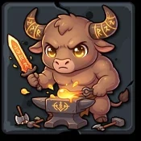

Player wiki noticeThis community-maintained page may contain gameplay, story, and mature-content spoilers.
Chronoromancer——项目指南
编目屏幕
工作进展
编目屏幕是您个人物品的主要界面。它分为几个不同的领域:
左栏-资源
屏幕的左侧显示您当前资源计数。这些是游戏所跟踪的数量, 而不是您直接从库存中使用的“ 物品 ” ,除了 Concumable 。
| 项目 | 说明 | 使用 | 项目 | 说明 | 使用 |
|---|---|---|---|---|---|
| 财富 | 主要货币 | 几乎所有采购 | 能源 | 消费 | +25/50 能源 |
| 宝石 | 稀有货币 | 具体采购 | 舒适 | 消费 | + 25/50 冷静 |
| 晶体 | 优惠货币 | 具体采购 | 材料 | 手工业资源 | 构建/工艺 |
| 粮食 | 消费 | + 10 满足 | 家具 | 手工业资源 | 构建/工艺 |
| 医药 | 消费 | +25/50 卫生 | 成分 | 手工业资源 | 构建/工艺 |
手工业资源分为三个层次:普通(白色)、稀土(稀土)和Epic(黄金 ) 。 用于建筑、工艺或升级的数量和/或稀土通常取决于水平(如果有的话)或其他一些变量(例如Fernando的服装升级)。对于医药、能源和舒适消耗品,你需要Willow的强化愈合活性,这是Story Beat 37.当其数量以黄金而不是白色显示时,你会知道它是活性的。
顶行——设备槽
八个设备插槽显示在库存的顶端。每个插槽显示您当前项目的图标和级别( 或完全升级时的 MAX) , 以及您可能拥有的有效奖金级别, 位于青蓝色的级别之后(目前仅用于 Melee Weapon and Armor, 9.8.5) 。
| 项目 | 职等 | 使用 | 项目 | 职等 | 使用 |
|---|---|---|---|---|---|
| 梅丽武器 | 0 — 10 | Melee战斗 | 临时外衣 | 1 — 5 | 见下文 |
| 范围武器 | 0 — 10 | 见下文 | 约会外形 | 1 — 5 | Portia* |
| 装甲 | 0 — 10 | 战斗 | 正式外调 | 1 — 5 | Maggie* |
| 能力项目 | 1 — 5 | 见下文 | 书面备忘录 | 1 — 10 | 魔法战斗 |
外号
所有服饰都有机会获得额外的工作经验。工作时,获得额外分数的几率是:
(sum of outfit levels) / 16因此,它并不总是得到保证,即使所有 最大,但它仍然是最高的机会。除了完成一个探险辅导课程:"把你的临时服装提升到三级"之外,"临时外衣"本身似乎没有任何好处.
"约会外衣"帮助推进Portia的故事线:她的一次探险没有解锁,除非是3级或更高级("Portia的购物旅行"),她最喜欢的一个统计是"Dating Outfit Level QQ 4",帮助每次与她的互动都获得更多的分数.
正式的外衣水平帮助推进Maggie的故事线:一个人需要在2级或更高,而其中2人需要在3级或更高.
"约会外衣"帮助推进Portia的故事线:她的一次探险没有解锁,除非是3级或更高级("Portia的购物旅行"),她最喜欢的一个统计是"Dating Outfit Level QQ 4",帮助每次与她的互动都获得更多的分数.
正式的外衣水平帮助推进Maggie的故事线:一个人需要在2级或更高,而其中2人需要在3级或更高.
中段——三行八.
设备行下方有三排八项槽:
- 第1行——礼品: 用于增加与NPC关系点的浪漫礼物,也可以用于 培训劳动者;.
- 第2行——巴夫消耗品: 战斗/ 社会 buff 项。 单击 buff 会消耗一个并激活效果。 活动 buffs 显示为红色 。
- 第3行——神秘项目: 启动锁定("?")并通过游戏玩法发现的特殊插槽,一旦发现,它们就会显示其真实的图标并变得可用.
底栏— 关键项目
底部的可横向滚动栏显示您所有获得的密钥项。密钥项是独特的被动项,提供各种永久奖金或解锁故事内容 。
用品屏幕
切换按钮
在存货屏幕的右上角,一个圆按钮将您切换到“ 用品屏幕” (位于您的 Grimode 上方 ) 。 “ 用品屏幕” 跟踪用于管理妓院工作人员( 工人、 女仆、 怪物女孩) 、 英雄物品( TD) 的项目, 并列出不同类别的各种已获得物品。 屏幕可垂直滚动, 并排列成多个可滚动的横向行,每行覆盖一个不同的工作人员/ 物品类别。在屏幕的右上角, 相同的圆按钮将您带回存货屏幕 。
行数
工人项目
主项
显示您的女仆物品清单(它没有显示设备的,如工人物品行所做的),关于女仆物品的更多信息(其效果,如何获得),请参见维基百科中专栏: 女佣项目.
怪物项目
显示您的获得的怪物消耗品(Smelling Salts& Monster Tonic) , 以及您目前获得的工具。 工具在Monster Girls访问时使用, 并通过游戏游戏获取。 有关这些物品的详细列表以及如何获取,请参考维基百科中的相关条目: 消耗品 & 工具
采矿项目
显示您所选的( 铁、 铜、 钻石 ) 、 硬币( Iron、 银、 Mithril) 和 矿物集群 的数量 。 采矿,可以使用它们挖掘地牢的墙壁,如果有采矿技能的话。 Gastoff's Forge.
收藏
显示不同的项目,每个项目都有自己的获取方法和用途。 Shelly礼品店 通过洞穴搜索,或者在完成度假工人的地块(单,双,三重)后随机获取. Leather是通过杀死特定的暴徒从地牢中获取的,只在Cobler商店中使用. 部件是通过Mech深度级(41-45)的战斗获取的,主要用于购买和/或升级Merchantbot的商店的关键物品. 凤凰羽毛是通过杀死无限地牢或Epic深度级的类似凤凰的暴徒来获取的. 它们在战斗中死亡时会使你恢复到完全健康.您可以在地牢上或关闭地牢里进行切换:将它们加一个红锡,类似于活跃的陶片。最后,有6个无限的怪物滴(只有无限的地牢)可以用来购买一些关键物品,特殊礼物,或者升级Soulstones(参见. Theneas 升级服务).
陆军装备
显示您目前所有获得和装备的英雄物品。 大部分可以使用 EPOM 和 Jinx 购买,而其中一部分是 Kupie 的成就奖励 。
前言
为便于撰写,以下各节将统一使用一些缩写:
- DC:龙币,地牢货币
- C: 共同等级(材料、织物和成份)
- R: 稀有等级
- E: 等级
设备
装备永久升级并依次升级:每级替换前一级,每级装备中总有一个. 装备在战斗和微型企业遭遇中提高战斗性能,除了其基础水平外,一些装备还可以有一个奖励有效级别,在级别后以青蓝色表示,这个号码用于计算目的,并赋予该物项一个新的"有效级别",即其等级与有效奖金的总和.
梅丽武器
Melee武器用于战斗,用于melee战斗行动,每关会增加物理攻击损伤,还可以根据使用的STAT(每关x2,拥有武器掌握技能的x3)提供微博遭遇计算中的奖金,它也是可以有奖金有效级的设备之一.
| 职等 | 名称 | 升级方法 | 费用 |
|---|---|---|---|
| 0 | 木头俱乐部 | 启动齿轮 | — |
| 1 | 木剑 | Gastoff | 150金币 |
| 2 | 铜剑 | Gastoff | 250金+30C 材料 |
| 3 | 铁剑 | Gastoff | 600黄金+20R材料 |
| 4 | 钢剑 | Gastoff | 1200金+10 E材料 |
| 5 | 密斯里尔剑 | Gastoff | 10K黄金+40 C/25 R/15 E 材料 |
| 6 | 魔法剑 | 米诺陶尔铁匠 | 7个 |
| 7 | 地狱之剑 | 米诺陶尔铁匠 | 8个 |
| 8 | 鲁能剑 | 米诺陶尔铁匠 | 9个 |
| 9 | 神剑 | Sylwithe | 10 个晶体 |
| 10 | 天剑 | Sylwithe | 10 个晶体 |
| 类型 | 名称 | 使用方法 | 奖金 |
|---|---|---|---|
| 关键项目 | 剑链 | 商场(35个部件,5个DC) | + 1 |
| 关键项目 | 暗谢 | 杀死Nhalos(战士协会的查询) | + 1 |
| Mech 方案 | 忍者号 | 选择与她战斗并获胜(见下文) | + 1 |

Sylwithe 随时可以升级你的武器,无论级别如何,但您可能只希望将您的晶体保存到最后2次升级. Minotaur 铁匠可以在至少1级时升级你的melee武器,每次升级成本为2+当前级别DC.他将永远出现在26层的左下方,周围是熔岩,每次遇面只能升级一块设备,他也可以随机在其他楼层以瓷砖形式出现.
Android Ninja Mech 方案(第41-45层)是一个 一次性接触如为您走开",你会 再也见不到她了根据她的警告,只有至少拥有 30个组成部分"牺牲一切开始灵魂的转移" 将花费你 所有组件和所有的DC。如果你想引发这种情况,则提出两项建议:
- 在启动情景前, 花费大部分组件和全部DC( 保存约 30 个组件)
- 如果输掉比赛,退出游戏并加载你最新的自动保镖(每场在地牢的比赛后,游戏自动保镖),如果你想再次遇到她.
装甲
装甲级用于战斗中,每级都提高减损率,也是微型企业遭遇时减少破坏的最显著因素之一,与Melee武器一样,它也是可以有奖金有效级的设备之一.
| 职等 | 名称 | 升级方法 | 费用 |
|---|---|---|---|
| 0 | 纹身拉格 | 启动齿轮 | — |
| 1 | 皮革装甲 | Gastoff | 150金币 |
| 2 | 链邮装甲 | Gastoff | 250金+30C 材料 |
| 3 | 定时装甲 | Gastoff | 600黄金+20R材料 |
| 4 | 骑士装甲 | Gastoff | 1200金+10 E材料 |
| 5 | 皇家装甲 | Gastoff | 10K黄金+40 C/25 R/15 E 材料 |
| 6 | 骨制装甲 | 米诺陶尔铁匠 | 7个 |
| 7 | 地狱装甲 | 米诺陶尔铁匠 | 8个 |
| 8 | 神盾舰 | 米诺陶尔铁匠 | 9个 |
| 9 | 装甲 | Sylwithe | 10 个晶体 |
| 10 | 天体装甲 | Sylwithe | 10 个晶体 |
| 类型 | 名称 | 使用方法 | 奖金 |
|---|---|---|---|
| 技能 | 痛苦容忍 | 医疗中心(未来芬吉区)(见下文) | + 1 |
| 关键项目 | 皮靴 | 科布勒店(10皮) | + 1 |
| 关键项目 | 钟壳 | Shelly礼品店 (50枚海贝壳) | + 1 |
| 关键项目 | 夜衣画 | Ruxandra的炼金店 (50个血球) | + 1 |
| 关键项目 | Pauldrons( 一级) | Gastoff's Forge | 最大+3 (密斯里尔) |
| 关键项目 | 宝石装甲 | Gastoff's Forge | 最大+4级 |
| 关键项目 | 钛平板 | 杀死艾吉龙( E)战士协会的查询) | + 2 |
| 关键项目 | 绘图装甲 | 情景(200个组件) | + 2 |
与melee武器升级类似,Sylwithe可以随时升级你的装甲,无论级别如何,但你可能只希望将你的晶体保存到最后2次升级. Minotaur铁匠可以在至少1级时升级你的装甲,每次升级需要2+当前级别DC.
范围武器
在地牢战斗中使用。 也影响到Cucker-Chucker小游戏—每款武器级别都提高5% 。在未来的大纪元抵抗者隐藏处(L1–L5通过黄金和材料)或Sylwithe的洞里可以升级。
| 职等 | 名称 |
|---|---|
| 0 | 扔石头 |
| 1 | 弹弓 |
| 2 | 手枪 |
| 3 | 等离子手枪 |
| 4 | 突击步枪 |
| 5 | 冷却步枪 |
| 6 | 晶体喷射器 |
| 7 | 聚变炮 |
| 8 | 福特克斯炮兵团 |
| 9 | 神盾师 |
| 10 | 天炮号 |
能力项目
专用设备与您在角色创建中选择的熟练程度有关。 开始于 1 级 。 提供 每级+2奖金 到微型商家时遇到统计检查(x3带有武器掌握技能)。 Goblin 商贸公司 地牢情景,使用龙币(每次升级6-7枚硬币,每次访问1枚),最高达到4级.
书面备忘录
格律备忘录被用于基于魔法的战斗中,它增加了神奇的破坏输出和咒语的效果.
| 职等 | 名称 | 升级方法 | 费用 |
|---|---|---|---|
| 1 | 皮革文字备忘录 | 开始级别 | — |
| 2 | 边界备忘录 | Aziza, 向导背对战 | 1 000美元/ 回答谜题 |
| 3 | 阿尔卡内·格里姆备忘录 | 向导后列相遇 | 回答谜题 |
| 4 | 古老的文字备忘录 | Void 假想(36-40):骨骼向导 | 10个 |
| 5 | 天体文字备忘录 | Void 假想(36-40):骨骼向导 | 10个 |
| 6 | Astral 格里摩尔备忘录 | Aziza "第六捆绑" | 3h,80 能源,40 平静 |
| 7 | 虚拟文本 | Blinky "第七叠" | 3h,90 能量,50 平静 |
| 8 | 星际迷航 | Sashina "象星" | 3h,100 能量,70 平静 |
| 9 | 神话故事 | Sabbath "九六" | 3h,110 能源,80 平静 |
| 10 | Crono- Celevious Grimonic 文本 | Nyxara "第十锚" | 3h,120 能源,90 平静 |
Void 向导(从Void 假想的骨骼mage)可以将您的Grimouse从 1 升级到 5 ,但您可能想在进入地牢前将其升级到 3 。要访问最后的 5 个升级,您需要先达到 Grimouse 级别 5 , 并与提供升级的字符结合 。对于 Sashina ,当她在 Altar 会议厅( 3 PM - 9 PM) 时,可以使用该假想 。
服装/服装
服装被永久升级,并依次升级。 超常影响社会互动、关系行动、某些工作行动,以及国家计生委如何回应你。更高层级打开了新的对话选项,改善了日期场景的结果。
临时体外适应(1-5级)
在日常社会状况中,L1会影响一般的NPC互动和技能特定的工作动作。L1会随着一些职业的创造而自由出现;L2可在现商场获得;L3-L5可在Fernando的中世纪德米斯内裁缝店获得。
| 职等 | 名称 |
|---|---|
| 1 | (基本临时) |
| 2 | 凉爽的外衣 |
| 3 | 高级伤病员 |
| 4 | 临时体外型 |
| 5 | 传说中的意外意外 |
约会外配位(1-5级)
在约会场景和浪漫的 NPC 互动中诞生。 L1 可在 Present Mall 使用; L2–L5 可在 Fernando 的裁缝店使用。
| 职等 | 名称 |
|---|---|
| 1 | 基本约会外配 |
| 2 | 增强约会外形 |
| 3 | 时髦约会外形 |
| 4 | 超时约会 |
| 5 | 传说中的约会外形 |
正式外调(1-5级)
在专业、高社会以及正式的NPC互动中沉迷。L1在现商场;L2–L5在Fernando的裁缝店。
| 职等 | 名称 |
|---|---|
| 1 | 基本正规外衣 |
| 2 | 强化正规外接 |
| 3 | 杰出的正式外衣 |
| 4 | 常规外衣 |
| 5 | 传说中的正式外衣 |
资源
资源是库存屏幕左栏追踪的原始数量,大多数不是直接“使用”,而是作为购买、升级、设计和交易的费用。
财富
游戏的主要货币—— 几乎每一次购买、升级和动作都要花费三个时代。通过工作、投资、地牢抢劫、出售贵重物品和妓院收入赚取收入。
宝石
一种更稀有的货币。 用于特定溢价购买,如宝石脚跟(2 000美元+2宝石 ) 。通过地牢抢劫、寻觅奖赏和某些寻觅相遇获得收益。
晶体
超罕见溢价货币。 专用于晶体销售商( Lillian 的 Lair, Seraph 的 Sanctuary, Sylwithe 的 Hollow) , 用于强大的一次性升级、 技能和永久的Stat助推 。
水晶是通过下列方式获得的:
- 将关系最大化为"in_love"——每个NPC实现1个晶体(通过卧室地块触发).
- 向导启动测试— 1 晶体( 17–24) 或 3 晶体( 25+)
- 收集所有21个灵魂在被吓坏的曼联灵魂Jar—— 1个水晶(加上Ornate Locket)
- 教学追求里程碑奖
- 卡特比勒人口里程碑地块
- 圣诞节爪机——每赢1个晶体
- Lillian/Seraph/Sylwithe重制水晶代码
粮食
点击以从编目屏幕中使用。每次使用会消耗 1 食物并恢复 +10 满足 满足会影响您在动作中轮胎的速度。 Maxstack: 99.
医药
点击从编目屏幕中选择使用。每次使用会消耗 1 个药品并恢复:
- +25 卫生 一般情况
- +50 卫生 当Willow的强化愈合 活动
最大堆栈: 99.
能源
点击从编目屏幕中使用。每次使用会消耗 1 个能量项目并恢复 :
- +25 能源 一般情况
- +50 能源 当Willow的强化愈合 活动
最大堆栈: 99.
舒适
单击以从编目屏幕中使用。每次使用会消耗 1 个舒适项目并恢复 :
- +25 冷静 一般情况
- +50 冷静 当Willow的强化愈合 活动
最大堆栈: 99.
材料/材料/材料 (共同、稀有、Epic)
用作下列费用的资源:
- 设备升级(武器、装甲——所需材料)
- 服装升级(意外、约会、正式——需要织物)
- Fernando工人服装升级(需要织物)
- 钓鱼棒升级(所需材料)
- 射程武器升级(所需材料)
- 在Aziza家和战斗机协会购买面包(必需史诗成分)
- 贸易站的资源交易
- 在某些地点的熟练学习(需要史诗材料)
无堆栈限制。 显示为三个数字( Common / 稀有 / Epic) , 以斜线分隔 。
无堆栈限制。 显示为三个数字( Common / 稀有 / Epic) , 以斜线分隔 。
收集资源(非采购来源)
资源也可以通过收集不同地点的可用行动来获取。所有收集行动都有1%的机会永久地给予+1 Luck作为奖金。
收集材料 —— 森林和空地(所有时代) 。 卷5 倍: 80% 常见, 16% 稀有, 4%史诗 。 资源优化技巧增加了一个奖赏卷 。 高感知给予奖金资源( 拉克决定是稀有还是Epic) 。
饲料 -在狩猎场、山地和森林提供,保证在80/16/4的相同分配中提供2种共同成分+3卷,适用同样的技能和感官奖金。
收集蛾丝绸 - 可以在Whipering Woods公司买到。 织物 (不是布--这些直接进入你的Fabrics资源中) 输出的尺度与你整个时代的毛虫/蛾/蝴蝶总种群。
| 人口 | 常见家具 | 稀有纤维 | Epic 织物 |
|---|---|---|---|
| 1–99 | 1–2 | 0 | 0 |
| 100–999 | 1–3 | 0 | 0 |
| 1K - 9.9K (韩语). | 2–4 | 0–2 | 1的30%机会 |
| 10K - 99K 电话 | 4–7 | 1–3 | 1的30%机会 |
| 100K - 999K (韩语) | 6–10 | 2–5 | 1–2的60%机会 |
| 1米 - 9.9M | 12–18 | 4–8 | 1–3 |
| 10海里+ | 20–30 | 8–12 | 3–5 |
扫描 未来Fringe区盈余分配中心提供。 Yields 6–18随机资源在材料、织物和成分之间随机分化。 质量: 80%是普通的,18%是稀有的,2%是史诗。 资源优化增加了奖金材料卷。
礼品
礼物是赠予NPC的单用途消耗品,以增加关系点,每件礼物在使用时消耗,并触发NPC独特的对话响应. 礼物点值因人物而异——一些NPC更喜欢某些礼物.
礼物通过NPC互动菜单("Give [Gift]"在角色动作列表上的动作)来赠送,每个礼物动作都有每日的限制——在一天内两次赠送同样的礼物将会导致负面反应和小分罚.
从影响最小到影响最大的一般等级顺序是:
| 礼物 | 一般用途 |
|---|---|
| 巧克力块 | 小甜甜 关系价值低 适合早期关系 |
| 鲜花 | 典型的浪漫姿态 适度的关系价值 |
| 泰迪熊 泰迪熊 泰迪熊 泰迪熊 | 可爱的私人礼物 适度的关系价值 |
| 书 | 深思熟虑的智力天赋,中度关系价值,对学术性的国家计委更有效. |
| 红酒 | 成熟的浪漫天赋 中高关系价值 |
| 发光 | 奢侈的亲密礼物 高价值的关系 |
| 内衣 | 非常亲密的天赋 关系价值很高 在某些关系阶段才合适 |
| 珠宝 | 最终的浪漫投资,所有礼物的最高关系价值 |
超越关系的其他礼品用途:
- 鲜花 ——作为某些故事事件(例如用Miki拍的情节需要花在盘中)的一部分而完成.
- 巧克力块 作为一次Rogue训练活动,可以从 Uptown便利店偷一次
- 鲜花 ——可以在下城公园(一次)和城堡花园(一次)免费选取.
堆叠 : 所有礼品堆至99. 便利店可提供巧克力和泰迪的散装购买选项(x3).
巴夫消耗品
Buff消耗品是一次性使用的物品,可激活一个临时增强装置 24个游戏时数 从使用时开始。每次只有一个布夫可以活动——试图在布夫已经运行时使用重复。
活动布夫以 a 显示 红色锡 当 buff 过期时( 24小时后) ,它的静电效应会自动删除。
单击使用 直接从编目屏幕。 盘旋声音确认,当您有库存且没有活动布夫时,它可以点击 。
| 芭芙( 芭芙 ) | 会期 | 效果 |
|---|---|---|
| 时间 | 24小时 | 将关系行动的时间成本降低20% |
| 消毒剂 | 即时 | 立即恢复健康、能源,并保持其最大值的平静。 没有一个定时布法—— 效果是即时的和完整的。 |
| 权力 | 24小时 | 在地牢战斗中,用X1.5将所有外向的人身攻击损伤乘以% |
| 盾牌 | 24小时 | 在地牢战斗中将所有损伤减半(÷2,最低1) |
| 焦点 | 24小时 | +25智能,+25神秘,+25技术,+25感知 |
| 愿望 | 24小时 | +200 Erotic Experience.在实验模式中,也添加+50 Beaststat. |
| 科隆岛 | 24小时 | +10 魅力,+10 吸引力 |
| 运气 | 24小时 | +50 运气 |
注释:
- 消毒剂 这是唯一一个瞬间而不是随时间推移而起作用的布夫——它起到一种完全的紧急治疗的作用。
- 焦点 和 科隆岛 推动直接影响关系互动、收入计算和技能检查的数据
- 权力 和 盾牌 在进入地牢之前最有用
- 运气 和 愿望 只在Sylph商店(Kupie)出售——任何普通商店都买不到
- 所有堆栈到 99
神秘项目
神秘物品占据了盘点屏幕上的8个特殊插槽。所有插槽都开始锁定并显示为问号图标。一旦发现某个项目(通过游戏游戏、购买或接收),该插槽将揭示其真实图标,项目便可以使用。发现是永久的,一旦解锁,该插槽将保留。
| 槽 | 项目 | 效果和用途 |
|---|---|---|
| 1 | 玩具 | 一个可爱的玩具奖,通过神秘物品赠送动作作为NPC的礼物使用,关系价值小,在完成Miki的GuGuDolly探险后可以通过Sylph商店(700美元)或商场获得(350美元). |
| 2 | 证券 | 某些购买或互动所需的特别凭证,用作给国家计生委的礼物,可从Sylph商店获得(2 500美元)。 |
| 3 | 宝石脚跟 | 粗糙的宝石夹在高跟鞋上,用作国家生产力委员会的礼物。 配备在妓院工人上 作为工人物品(非普通等级:+10%的收入,+5名) 。 设备安装从您的消耗性库存中扣除一个;未设备安装返回。 可在Cobbler商店(2 000美元+宝石+织物)或Sylph商店(5 000美元)获得。 |
| 4 | 渔业 | 当渔船在钓鱼游戏中触碰钓鱼圈时自动消耗。没有手动使用—— 仅仅在你的库存中保存它们就可以让小型游戏运行。 以10(20金在钓鱼场)的堆装购买。 |
| 5 | 龙胆 | 龙为控制地牢经济而铸造的硬币。 Minotaur铁匠(武器/装甲升级:3–9枚硬币 ) 、 Goblin Merchant(设备升级:6–7枚硬币 ) 、 以及许多地牢情景。从地牢瓷砖和情景或Kupie Sylph Shop获得,每架100,000,000美元(12小时休息). |
| 6 | 灵魂贾 | 一个神秘的罐子,它捕捉并包含了来自鬼屋庄园的灵魂。 用于 Friday 的灵魂收藏搜索线 。 收集21 个灵魂, 以获取 Ornate Locket 关键物品和水晶 。 |
| 7 | 血块 | 神奇保存的吸血鬼血液。 点击可消耗: 捐赠 +1 吸血鬼统计 和 完全恢复健康、能源、平静和满足度 与吸血鬼有关的地牢和故事内容 |
| 8 | 价值 | 通过盗贼协会抢劫系统获得的被盗物品和金币,通过Arestes (Thieves Guard)为黄金和盾的名声,不能直接使用——必须用栅栏。 |
关键项目
关键物品是独特的,不可保存的物品,可以自动提供被动奖金,解锁故事内容,或者作为探险物品. 把它们放在你的关键物品栏中是需要的——没有装备或使用需要的(探险物品除外,这些物品在故事事件期间消耗或移交).
存储密钥项目
魔法光谱
- 效果 : +10% 智能和+10% 吸引力,每个最小+1(一直活跃)
- 如何获得: Dungeon 情景—— 在他的会议厅里遇到傲慢的学者。 赢得情报辩论(您的智力减20) 。 OR 拥有慈悲的技巧并教他。
伟大的皇冠
- 效果 : 所有12个基本统计(Strength、Intelligence、Charm、Stamina、能力、创造力、观念、神秘、技术、运气、烹饪、商业)中,每组最低为+2%
- 如何获得: 敦格昂情景——在王位室击败斯凯莱顿王的老板,或者用Telekinesis技能将其拆除.
欧纳特锁盒
- 效果 : +10% 的魅力和+10% 的吸引力, 最少每个+1 。 表示包含唐胡安·卡萨诺瓦的灵魂,主诱惑者 。
- 如何获得: 完成Friday的灵魂收藏探险——收集全部21个灵魂,与1个水晶并列获奖.
1环
- 效果 : +1 奖金关系点在每一次正面关系行动上(与科隆布夫和其他奖金套在一起)
- 如何获得: 登革热场景——在华丽的室内击败吸血鬼主(与他战斗或使用轻魔法),然后从他的骨灰中抢走金戒指.
角斗士带
- 效果 : 所有地牢战役的战斗经验+50%
- 如何获得: 敦煌场景——格斗俱乐部竞技场,击败所有三名对手加竞技场冠军老板.
捕捞罗德
所有三根棒都是按顺序获得的——在购买升级之前必须拥有前一根棒.
木头罗德
- 效果 : 基本钓鱼棒 需要租渔船玩钓鱼游戏 捕捉普通鱼
- 如何获得: 钓鱼台(中世纪村落)——100金+10件普通材料
铁棒
- 效果 : 改良的钓竿,捕到的鱼比木棒更优质.
- 如何获得: 钓鱼胡同——500金+10稀有材料,需要木制罗德.
黄金罗德
- 效果 : Pre钓棒 捕捉稀有高价值鱼类.
- 如何获得: 钓虎——1000金+5史诗材料,需要铁罗德.
小型游戏和社会密钥项目( S)
卢特
- 效果 : 所有节奏迷你游戏中的+5ms计时窗口——鼓,舞,怪兽计时,以及节奏迷你游戏. 这使得精准计时明显地更加宽容.
- 如何获得: Bards Guard探险队的奖励
运动车
- 效果 : 奢侈车辆 解锁某些旅行选择 并给NPC留下深刻印象在具体的故事/社会互动。
- 如何获得: 体育汽车经销商,现市中心——25万美元
翡翠龙
- 效果 : 一个珍贵的翡翠雕像没有被动的静电效应
- 如何获得: 敦煌场景——翡翠龙的宝库室,在战斗中击败龙OR支付10龙币,可以在Exotic Goods Merchant(Grand Bazaar)交易到Silas,作为妓院工人解锁Jade.
胶囊蘑菇
- 效果 : 生物发光真菌,无被动静电效应.
- 如何获得: 搜索遭遇(dungeon/exploration),用于涉及Willow的搜索.
Kupie 爱情培训关键项目
这五件物品只影响Kupie的爱情训练迷你游戏(通过阁楼进入),除此之外没有效果.
永远的玫瑰
- 效果 : 爱训练中每点击2次爱
- 如何获得: Kupie 探险线/爱情训练奖
希尔夫王室 (Kupie 爱情培训关键项目)
- 效果 : * 爱培训中的2 sylph生产(包括心脏和魅力)
- 如何获得: 登革热场景— 击败巴尔罗格老大(只出现在29–30楼). 皇冠在恶魔的骨灰中被发现.
神奇的哈普枪
- 效果 : 爱训练中每个活跃的魅力手艺任务上 +1 幽灵 sylph
- 如何获得: Sylwithe的圆谷——10个晶体
天体小号
- 效果 : 爱训练中每个活跃的心脏工作上+1 幽灵素
- 如何获得: Kupie 探险线奖励
心弦锁
- 效果 : 爱训练中被动定时器每秒2次的爱
- 如何获得: Kupie 探险线/爱情训练奖
Dungeon 战斗关键项目
火元素传奇
- 效果 : + 20% 的战斗中火力魔法损伤。在地牢中赋予火力覆盖破坏瓦片和熔岩瓦片的豁免(通常这些交易在您穿过时都会造成破坏 ) 。
- 如何获得: Pyrra的火元素探险线——在完成她的故事线后获得.
密钥项目
圣诞花环
- 效果 : +5%的妓院日收入,+5%的妓院日声誉增益(活动期间)
- 如何获得: 圣诞村Claw Machine——从奖金池获得一次性奖金
查询 / Story 关键项目
这些物品没有被动的Stat奖金,是在具体的故事探索中获取和使用或移交的。
向导酒
- 目的: 为Gandon的探险线查询物品,消耗引发了他的青蛙变形情节.
- 如何获得: Story 追求奖
黑裤子
- 目的: 为Gandon复仇探险线查询物品,交付完成探险任务.
- 如何获得: Story 追求奖
拳击手协会
这四件永久的战斗物品立即从追求的老板的杀戮中掉下来;它们不属于后来的盾交替奖励的一部分.
- 睡眠孢子 21, Gorgeroot(35层),为睡眠成功加7个百分点,使每个成功睡眠获得10%的额外保证回合机会。
- 黑暗的宝藏 ——第22次,Nhalos(第38层),增加+1有效melee武器级,并配有Sword chain.
- 裸露布 查询 23, Nihil( 底座 40 ) 。每一次逃避的机会都加5 个百分点,这本身并不产生逃避的机会 。
- 钛平板 ——查询24,艾吉龙(底座43),增加+2有效装甲水平.
其他关键项目家庭
几个重要项目的家庭在自己的指南中而不是在这里深入论述:
- 灵魂石 (八石具有水平缩放的被动效果)——参见灵魂石指南.
- 防弹衣 (Iron, Silver, Mithril, 和 Gemmed Heelds, Shields, Gauntlets, 和 Pauldrons)——参见"铁匠与堡垒和战斗指南".
- 对齐文物 (Balance Stales,德古拉斯环形山,Cthulhu的头像,Ocean Fragrance,以及三件主对齐武器)——参见对齐系统指南.
- 地图通行证 (Metro Pass, Wagon Pass, Hyperloop 坐标)——由以上商店部分覆盖.
关键项目——购置摘要
| 项目 | 何处去 |
|---|---|
| 魔法光谱 | 敦煌情景——击败傲慢的学者(智能检查或爱默特技能). |
| 伟大的皇冠 | Dungeon方案——击败Skeleton King(战斗或Telekinesis技能) |
| 欧纳特锁盒 | Friday的追求——收集所有21个灵魂. |
| 1环 | 敦煌情景——击败吸血鬼主(战斗或轻魔法). |
| 角斗士带 | 敦煌场景——格斗俱乐部竞技场,击败所有战斗机+冠军. |
| 希尔夫王室 | Dungeon方案——击败Balrog(仅29-30楼) |
| 木头罗德 | 鱼壳-100克+10个普通垫子 |
| 铁棒 | 钓鱼场——500g+10个稀有垫子(需要木制罗德) |
| 黄金罗德 | 钓鱼台——1000g+5个史诗垫(需铁棒). |
| 卢特 | 酒吧协会探险队 |
| 运动车 | 体育汽车交易商(下城)——250 000美元 |
| 翡翠龙 | 敦煌场景——击败翡翠龙或支付10枚龙币. |
| 胶囊蘑菇 | 搜索相遇 |
| 火元素传奇 | 皮拉的探险线 |
| 圣诞花环 | 圣诞爪机 |
| 神奇的哈普枪 | Sylwithe的圆谷——10个晶体 |
| 永远的玫瑰 | Kupie 爱情培训奖励 |
| 天体小号 | Kupie 探险线奖励 |
| 心弦锁 | Kupie 爱情培训奖励 |
| 向导酒 | Story 追求奖 |
| 黑裤子 | Story 追求奖 |
| 睡眠孢子 | 21号联谊会——在35楼击败Gorgeroot |
| 黑暗的宝藏 | 格斗家协会22号——在38楼击败Nhalos |
| 裸露布 | 格斗家协会23号——在地板上击败Nihil 40号 |
| 钛平板 | 格斗家协会调查24——在楼层击败艾吉伦 43 |
圣诞消费
这两个物品属于玩家控制的圣诞节系统,是内部计数器,而不是传统的库存物品——它们不出现在"库存屏幕"或"用品屏幕"中,而是在保存文件中被跟踪,并在圣诞节期间的圣诞上映.
热巧克力 (bm_e_count)
在与圣诞村 NPC 互动时用作关系动作资源。当您与 Holly 、 Ginger 或 Noella 进行温和饮料互动时,每个热巧克力都会被消耗。从 Claw 机器( 常见奖项) 中得益 。
糖果甘蔗 (bm_a_count)
圣诞赛事的可交易货币. 10 Candy Canes可以交易到Ginger 1 Claw Machine Token. End from Claw Machine(普通奖) , 也是从特殊的水晶代码( Chrono的假日奖励代码) 批量授予的.
当圣诞节被切开,当它再次切开时返回时,两个计数器都持续存在。当前游戏没有现实世界的事件结束重置 。
商店和物品销售商
本节涵盖了游戏中您可以购买物品,升级设备,或交易资源的每一处位置. Official website
2.1 现时代——上城
角方便仓库
小时:下午7时至11时
- 巧克力——15美元
- 巧克力x3 - 45美元
- 泰迪熊——100美元
- 泰迪熊x3— 300美元
- 小吃(粮食)——10美元
- 小吃×10(粮食)——100美元
城市健身业
小时:下午6时至7时
- 能源饮料——25美元
- 能源饮料x10 - 250美元
市立医院
小时:全小时开放
- 药品——25美元
- 药品x10 - 250
- 医生(恢复30家保健公司)——100美元
城市图书馆
小时:上午8时至下午10时
- 清洁手册第1卷 (女用品,仅妓院老板) — $400
地铁站 (上城)
- 大都会通道 (一次,解锁两个区地图) — $300
2.2 当代——下城
服装仓库(商场)
小时:上午9时至下午7时
- 内衣 (赠). — $500
- 发光 (赠). — $300
- 科隆岛 (buff消费) — $200
- 正式外调 (L0+L1升级) — $100
- 临时外衣 (L1+L2升级) — $250
- 约会外形 (L0+L1升级) — $100
- 古古多利 / 玩具 (Mystery Project 1,完成Miki的GuGuDolly探险后可用). — $350
市中心酒吧
小时:下午8时至3时
- 红酒 (赠). — $600
运动汽车经纪人
小时:上午9时至下午6时
- 运动车 (关键项目) — $250,000
地铁站 (下城)
- 大都会通道 (一次,解锁两个区地图) — $300
2.3 中世纪时代——德梅斯内国王
裁缝店 (农民季度)
小时:下午6时至9时
服装升级(均为永久性和顺序):
| 项目 | 要求 | 费用 |
|---|---|---|
| 临时L3 | 临时L2 | 1 000美元+20个普通织物 |
| 临时L4 | 临时L3 | 5 000美元+40个普通/5个稀有织物 |
| 临时L5 | 临时L4 | 2万美元+10个稀有的 / 5个史诗织物 |
| 约会L2 | 约会L1 | $250 |
| 约会 L3 | 约会L2 | 1 000美元+20个普通织物 |
| 约会L4 | 约会 L3 | 5 000美元+40个普通/5个稀有织物 |
| 约会 L5 | 约会L4 | 2万美元+10个稀有的 / 5个史诗织物 |
| 正式L2级 | 正式L1级 | $250 |
| 正式L3级 | 正式L2级 | 1 000美元+20个普通织物 |
| 正式L4级 | 正式L3级 | 5 000美元+40个普通/5个稀有织物 |
| 正式L5级 | 正式L4级 | 2万美元+10个稀有的 / 5个史诗织物 |
裁缝店也提供:
- Fernando的工人服装 · 将一名符合资格的妓院工人的衣物提升一个等级,费用为黄金+普通/稀有/廉价织物,费用为50级,随着购买的升级而增加,每个工人最多可得到2个Fernando升级。
- 可展示制服 (女用品,仅妓院老板) — $1,200
科布勒商店 (农民季度)
小时:下午6时至9时
- 宝石脚跟 (神秘项目插槽3) - 2 000美元+2宝石+2个史诗织物
- 工人 Sturdy 靴子 (工人物品,仅妓院老板) — $850
一般货物储存 (农民季度)
小时:下午6时至9时
- 常见成分x5 - 20美元
- 稀有成分 x1 - 20美元
- 通用材料x5 - 20美元
- 口粮(粮食x10) - 100美元
- 舒适/平滑x1 - 25美元
- 舒适/平滑x3 - 75美元
- 粗鲁的扫帚 (女用品,仅妓院老板) — $300
- 波兰克洛斯 (女用品,仅妓院老板) — $350
Arcane商店(Aziza) (国王德米斯内)
小时:上午10时至下午6时
- 书面备忘录 (L1+L2升级) — $1,000
- 时间扭曲 (时间buff消耗) - 300美元+1美元史诗成分
- 聚焦爱丽丝 (焦点布夫消费) - 300美元+1美元史诗成分
- 魔法动作 (女用品,仅妓院老板) — $2,000
- 神奇的西兰特 (女用品,仅妓院老板) — $4,500
- 工人安眠药 (工人物品,仅妓院老板) — $650
战士协会
小时:上午10时至下午8时
- 电源Elixir (电压消耗) - 300美元+1美元史诗成分
- 盾牌埃利克斯尔 (屏蔽布夫消费) - 300美元+1美元史诗成分
手工艺品和珠宝店 (大巴扎尔)
小时:下午6时至9时
- 珍贵珠宝 (赠). — $2,800
- 一致性魅力 (女用品,仅妓院老板) — $4,000
- 口语网络 (女用品,仅妓院老板) — $1,500
- 欢迎马特 (女用品,仅妓院老板) — $250
- 工人幸运魅力 (工人物品,仅妓院老板) — $500
- 工人 弗洛拉尔·海平 (工人物品,仅妓院老板) — $500
货物销售(Silas) (大巴扎尔)
小时:下午6时至9时
- 假发 (赠). — $1,000
- 芳香烧制 (女用品,仅妓院老板) — $1,800
- 铸造蜡烛 (女用品,仅妓院老板) — $400
罗迪·阿勒豪斯
小时:下午8时至3时
- 红酒 (赠). — $600
农村农场
小时:仅白天
- 鲜花 (赠). — $100
黑市 (Back Alleys,晚上10点至5点)
- 稀有材料x1 - 30美元
- 稀有成分 x1 - 30美元 (欺骗技能加倍输出)
- 稀有纤维x1 - 30美元 (欺骗技能加倍输出)
也提供罕见的行业:
- 25种稀有材料— 1种史诗成分
- 25种稀有成分 = 1种史诗织物
- 25种稀有织物 – 1种史诗材料
Lillian的巢穴 (Back Alleys ) 秘密巢穴。
水晶采购(除非注明,每次一次):
- 延长末日计时器+10天——1天晶体
- 水晶启蒙 (随机技巧) - 1个晶体
- 黑暗魔术 (技能) - 3个晶体
- 资源提示 (大型设计资源赠款) - 1个晶体
- 地狱生命力助推 (+10 最大能量,永久) - 1个晶体
- Redeem 晶体代码
车厢十字路口
- 瓦贡通道 (一次,解锁两个区地图) - 300金
2.4 中世纪——乡村脱衣舞
乡村市场
小时:下午6时至9时
- 基本用品 (恢复保健) - 8金
- 广告传单 (女用品,仅妓院老板) — $200
- 捆绑的笔刷 (女用品,仅妓院老板) — $1,200
钓鱼船 (Fishing Village) (英语).
小时:下午4时至5时
- 木头罗德 (关键物品,基本钓棒). - 100个黄金+10个通用材料
- 铁棒 (关键项目升级,需要 Wood Rod) - 500金+10种稀有材料
- 黄金罗德 (关键项目升级,需要铁棒) - 1 000金+5件史诗材料
- Fishing Bait x10 - 20黄金
显像手稿室 (摩纳斯特史诗)
- 古书 (赠). ——350金币
- 清扫手册第2卷. (女用品,仅妓院老板) — $2,000
- 培训杂志 (女用品,仅妓院老板) — $500
- 《工人培训手册》 (工人物品,仅妓院老板) — $1,000
乡村疗养院
小时:下午6时至9时
资源贸易(产出成分——可用于烹饪和制作):
| 贸易 | 费用 |
|---|---|
| 10种共同材料 − 5种共同成分 | 10份共同材料 |
| 10个共同织物 − 5个共同成分 | 10个共同布料 |
| 25种常用材料 − 1种稀有成分 | 25种共同材料 |
| 25种常见织物 − 1种稀有成分 | 25个共同布料 |
| 25种常用成分 − 1种稀有成分 | 25种共同成分 |
| 25种稀有成分 = 1种史诗成分 | 25种稀有成分 |
谈判技巧通过退还一些投入来降低有效成本. 欺骗技巧增加了+1的额外输出.
土匪藏身处
小时:下午6时至6时
资源贸易(产出材料):
| 贸易 | 费用 |
|---|---|
| 10种共同成分 − 5种共同材料 | 10种常见成分 |
| 10个共同织物 − 5个共同材料 | 10个共同布料 |
| 25种常用成分 − 1种稀有材料 | 25种共同成分 |
| 25个普通织物 − 1个稀有材料 | 25个共同布料 |
| 25种常用材料 − 1种稀有材料 | 25种共同材料 |
| 25种稀有材料— 1种史诗材料 | 25种稀有材料 |
车厢休息站
- 瓦贡通道 (一次,解锁两个区地图) - 300金
2.5 中世纪时代——Sylwithe的谷歌
访问 : Sylwithe的洞穴
在树林深处,一个古老的、充满天气的人物提供晶体动力的服务。设备升级是可重复的(每次购买一个级别,最高10级);物品是一次性购买。
| 项目 | 费用 |
|---|---|
| 升级 Melee 武器+1级 (最大L10级) | 10 个晶体 |
| 升级装甲+1级 (最大L10级) | 10 个晶体 |
| 升级范围武器+1级 (最大L10级) | 10 个晶体 |
| 掌握指南 (急救物品) | 5个晶体 |
| 经理徽章 (急救物品) | 5个晶体 |
| 神奇的哈普枪 (关键项目) | 10 个晶体 |
| 禅宗 禅宗 (工人项目) | 7个晶体 |
2.6 未来时代——总理部门.
VOID 消费者成就中心
- 工人感应器 (工人物品,仅妓院老板) — $75,000
小时:下午12时至2时
地下改造诊所
资源贸易(产出材料):
| 贸易 | 费用 |
|---|---|
| 10种共同成分 − 5种共同材料 | 10种常见成分 |
| 25种常用成分 − 1种稀有材料 | 25种共同成分 |
| 25种稀有成分— 1种史诗材料 | 25种稀有成分 |
2.7 未来时代——弗林格区
地下抵抗隐藏处
射程武器升级(永久及相继):
| 项目 | 要求 | 费用 |
|---|---|---|
| 射程武器L1 | 无射程武器 | $150 |
| 射程武器L2 | 范围 L1 | 250美元+30份共同材料 |
| 射程武器L3 | 范围 L2 | 600美元+20种稀有材料 |
| 射程武器L4 | 范围 L3 | 1 200美元+10美元史诗材料 |
| 射程武器L5 | 范围 L4 | 1万美元 + 40 普通/ 25 稀有/ 15 种史诗材料 |
盈余分配中心
共同与共同资源交叉交易(所有6种组合均按10:5的比例):
- 10种共同材料 − 5种共同织物
- 10种共同材料 − 5种共同成分
- 10个共同织物 − 5个共同材料
- 10个共同织物 − 5个共同成分
- 10种共同成分 − 5种共同材料
- 10种共同成分 − 5种共同织物
Seraph的三叠纪 (大气站~云层路径).
水晶采购(除非注明,每次一次):
- 延长末日计时器+10天——1天晶体
- 水晶启蒙 (随机技巧) - 1个晶体
- 学习轻魔法 (技能) - 3个晶体
- 即时1000个财富——1个晶体
- Divine 生命力激励 (+10 最大健康,长期) - 1个晶体
- Redeem 晶体代码
HyperloopTransit Nexus / PrimeTransport Hub 超高速运输枢纽
- 超圈坐标 (一次,解锁两个区地图) — $300
(可在任一中转地点通行)
2.9 敦革号——戈布林商船
一个妖精商人,以随机的地牢情景出现他升级了你的 能力项目 使用Dragon Coins——这个设备槽升级的唯一方法.
符合条件的: 能力项目必须是一级或以上。
费用: 6–7 龙币(以谈判技巧降为6).
限制 : 每次访问一次升级。
2.10 Kupie的爱情训练——Sylph商店
访问 : 阁楼 – Kupie的爱情训练迷你游戏 – 商店标签
在 Kupie 的闲置小游戏内部的游戏商店。 股票开始有限, 并逐渐从实时开始(每4小时+1个, 封顶为每件10个 ) 。这是唯一一个买Luck, Desire, 和几个没有在其他地方出售的神秘物品的地方 。
货币 : 财富(金)
礼物:
| 项目 | 价格 |
|---|---|
| 巧克力块 | $50 |
| 鲜花 | $150 |
| 泰迪熊 泰迪熊 泰迪熊 泰迪熊 | $250 |
| 书 | $500 |
| 内衣 | $800 |
| 红酒 | $900 |
| 发光 | $1,500 |
| 珠宝 | $4,000 |
巴夫消耗品:
| 项目 | 价格 |
|---|---|
| 科隆岛 | $600 |
| 能源(时间扭曲) | $800 |
| 消毒剂 | $900 |
| 焦点 | $1,000 |
| 权力 | $1,100 |
| 盾牌 | $1,200 |
| 运气 | $1,400 |
| 愿望 | $1,800 |
谜题:
| 项目 | 价格 |
|---|---|
| 玩具 (神秘的插槽1) | $700 |
| 证券 (神秘的插槽2) | $2,500 |
| 宝石脚跟 (神秘的插槽3) | $5,000 |
| 龙胆 (神秘的插槽5) | $1,000,000 |
说明: 运气和欲望在游戏中没有其它地方出售. Dragon Coins在地牢滴水之外也专门在这里出售.
2.11 圣诞村——爪机
访问 : 未来时代 – Fringe Zone – 大气站 – 圣诞村 – 圣诞村 –一旦正常的未来旅行可以进入,该地点就可永久使用; 使用它的圣诞精神切换来实现全游戏的活动.
村板爪机费用 1个圣诞节 每场比赛(5分钟),托肯斯(Tokens)是一种特殊的圣诞系统货币,通过:
- 完成圣诞节NPC故事探险(每场+1,+2为in_love里程碑).
- 登革热与丁塞尔相遇(每次遭遇+1,击败克拉姆普斯的+3).
- 与圣诞节任务挂钩的搜索会合(每个+1)
- 10 糖果甘蔗交易至Ginger − 1个令牌
奖项来自加权随机泳池,有些奖项是一次性的(标记为 $ ) 。一旦所有符合条件的工人都达到最高的服装水平或达到胜负上限,工人服装升级就会从泳池中下降。
| 奖 | 页:1 |
|---|---|
| 热巧克力 | 圣诞节消费(用于圣诞节活动) |
| 糖果甘蔗 | 圣诞消费——10可换取1个纪念品 |
| 泰迪熊 泰迪熊 泰迪熊 泰迪熊 | 列入库存的礼品 |
| 内衣 | 列入库存的礼品 |
| 珠宝 | 列入库存的礼品 |
| 500个财富 | 即时黄金 |
| 1 晶体 | 添加到晶体计数 |
| 工人服装升级 | 提升随机活跃工人服装+1级(最大L5级),自由球员:每个工人1胜1负. Patreon:每个工人2胜. |
| 圣诞花环 | 关键项目(+5%妓院收入,+5%声誉)——一次性 |
| 圣诞精神 | 技能——一次性 |
| 礼物 | 特别礼物项目——免费玩家最多1张 |
| 天鹅绒丝带 | 工人物品(稀有等级)——要求妓院所有权 |
| 煤炭 | 运气不好的结果——增加节省的煤柜台,但没有给予有用的奖品 |
| 老师 | 无奖金 |
克劳机器是主要来源 天鹅绒丝带 工人物品和 圣诞花环 。免费的玩家的MISS重量较高,摔跤重量较低,而且比溢价玩家更严格的礼品/服装帽。完整的动态重量表位于[圣诞村行进](圣诞村指南#克劳机器。
2.12关于商店的说明
贸易收益
两种技能影响到所有贸易地点的资源交易:
- 谈判 ——退款部分投入成本(如10个材料贸易成本仅有效7个).
- 欺骗 ——在产出数量中增加+1奖金
一次性对可重复
- 大部分装备升级都是一次性的(你无法两次购买L1装甲).
- 定期消费/礼品采购可重复
- 工人物品是可重复的——你可以购买多份副本,并为不同的工人提供设备
- 女佣物品是一次性购买,一旦购买,就从店里消失
Brothel 所有权要求
所有工人物品和女佣物品的购买动作都隐藏到您拥有 Rose& Thorn Brothel 之前不会出现在销售商中 。
水晶商店(Lillian/Seraph/Sylwithe)
这些销售商使用Crystals而不是黄金。每次购买水晶都是一次性的,每次运行后都会消失。“扩展毁灭日”和“Redeem Crystal Code”可以反复使用。
地图传出等效
每个时代都有自己的一次性地图通道,解锁区地图切换器按钮:
- 当代:地铁通道(300美元)——上城和下城地铁站均可使用.
- 中世纪时代:瓦贡山口(300金)——两辆大篷车地点都有.
- 未来时代:Hyperloop坐标(300美元)——可在两个中转中心获得
显示项目类别
以下是游戏中每个项目类别的概述:
在编目屏幕上:
| 类别 | 说明 |
|---|---|
| 财富/宝石/晶体 | 货币——无法使用的物品,只是跟踪总数 |
| 粮食 | 恢复满足状态,可从库存中点击。 |
| 医药 | 恢复健康,可从库存中点击。 |
| 能源 | 恢复能量,可以从库存中点击。 |
| 舒适 | 恢复平静,可以从库存中点击。 |
| 材料/材料/材料 | 通用、稀有和Epic级的手工艺资源 |
| 装备(武器、装甲、服装、备忘录) | 提高战斗力和社会效力的永久升级 |
| 能力项目 | 在地牢升级的个人专用设备 |
| 礼品 | 赠给国家生产者的单用途关系礼物 |
| 巴夫消耗品 | 临时Stat/战斗助推,24个在役小时 |
| 神秘项目 | 通过游戏游戏发现的特殊项目; 位点开始锁定 |
| 关键项目 | 提供永久奖金或故事进展的独特被动项目 |
在用品屏幕上:
| 类别 | 说明 |
|---|---|
| 工人项目 | 为妓院工人提供设备,提高他们的日常表现 |
| 主项 | 5名女佣的设备,增加清洁和妓院奖金 |
| 怪物项目 | 怪物驯服系统的消耗品和工具 |
| 采矿项目 | 采矿小游戏中的皮克斯、硬币和矿物集群 |
| 收藏 | 凤凰羽毛和无穷敦煌怪兽坠落 |
项目互动摘要
快速引用哪个项目类别与哪个游戏系统交互:
| 游戏系统 | 有关项目 |
|---|---|
| 敦煌战斗 | Melee武器 盔甲 射程武器 Power buff, Shield buff, Blood Orb |
| 微型企业遭遇 | Melee武器 盔甲 射程武器 熟练品 格莱迪亚托的带 |
| 敦煌经济 | 龙币(Minotaur铁匠,Goblin Merchant,情景选择) |
| 钓鱼游戏 | 钓竿(Wood/Iron/Gold),钓贝 |
| 节奏/舞蹈小游戏 | 路特( +5ms 计时窗口) |
| 笨蛋游戏 | 射程武器(推速) |
| Kupie 爱情培训 | 永恒的玫瑰 希尔夫王冠 魔法哈普 天空小号 心弦锁 |
| 业余日收入 | 工人物品(income_percent、income_flat、外表、魅力、client_bonus) |
| 黑人的名声 | 工人项目(reputation_flat)、佣人项目(brothel_reputation_percent)、圣诞花环 |
| 员工 EXP | 工人物品(exp_percent、exp_bonus) |
| 女佣清洁 | 护栏(cleaning_flat,cleaning_percent,all_maids变体) |
| 乱伦生成 | 辅助项目(mess_reduction_flat、mess_reduction_percent) |
| 业间收入(全球) | 女佣(brothel_wealth_percent),圣诞花环 |
| 关系 | 礼品,1环,科隆布夫,Patreon 硕士熟练程度 |
| 战斗数据 | 专注增益、古龙水增益、幸运增益、魔法眼镜、炫酷王冠、华丽坠饰 |
| 玩家健康/能源 | 药品、能源、舒适用品、抗兴奋剂、血球 |
| 满足 | 血球食品 |
| 魔法伤害 | 火元素塔利斯曼 |
| 吸血鬼统计 | 血球(每次使用+1) |
| Story/遗赠 | 巫师葡萄酒 黑裤子 翡翠龙 灵魂Jar 胶囊蘑菇 |
相关页面
Chronoromancer — Items Guide
The Inventory Screen
WORK IN PROGRESS
The Inventory Screen is the primary interface for your personal items. It is organized into several distinct areas:
Left Column — Resources
The left side of the screen displays your current resource counts. These are quantities tracked by the game, not "items" you use from the inventory directly, except for Consumable.
| Item | Description | Use | Item | Description | Use |
|---|---|---|---|---|---|
| Wealth | Primary currency | Almost all purchase | Energy | Consumable | + 25/50 Energy |
| Gems | Rare currency | Specific purchases | Comfort | Consumable | + 25/50 Calm |
| Crystals | Premium currency | Specific purchases | Materials | Crafting resources | Build / Craft |
| Food | Consumable | + 10 Satiation | Fabrics | Crafting resources | Build / Craft |
| Medicine | Consumable | + 25/50 Health | Ingredients | Crafting resources | Build / Craft |
Crafting resources come in three tiers: Common (white), Rare (purple), and Epic (gold). The quantity and/or rarity used for building, crafting, or upgrading usually depends on levels (if any) or some other variables (e.g., Fernando's Clothing Upgrade). For the Medicine, Energy, and Comfort consumables, you'll need Willow's enhanced healing active, which is a reward from Story Beat 37. You'll know it is active when their number are displayed in gold instead of white.
Top Row — Equipment Slots
Eight equipment slots are displayed across the top of the inventory. Each slot shows your item's current icon and level (or MAX when fully upgraded) and any effective bonus level you might have, located after the level in cyan blue (currently only for Melee Weapon and Armor, 9.8.5).
| Item | Levels | Use | Item | Levels | Use |
|---|---|---|---|---|---|
| Melee Weapon | 0 — 10 | Melee Combat | Casual Outfit | 1 — 5 | See Below |
| Ranged Weapon | 0 — 10 | See Below | Dating Outfit | 1 — 5 | Portia* |
| Armor | 0 — 10 | Combat | Formal Outfit | 1 — 5 | Maggie* |
| Proficiency Item | 1 — 5 | See Below | Grimoire | 1 — 10 | Magic Combat |
The Outfits
All outfits can give you a chance of gaining an extra point of working experience. When working, the odds of getting that extra point are:
(sum of outfit levels) / 16. So it's not always guaranteed, even when all are maxed, but it's still the highest chance.The Casual Outfit doesn't seem to have any benefits on its own, apart from completing a quest tutorial: "Upgrade your casual outfit to level 3".
The Dating Outfit helps with progressing Portia's storyline: one of her quests doesn't unlock unless it's level 3 or higher ("Portia's Shopping Trip"), and one of her favorite stats is "Dating Outfit level >= 4", helping earn more points per interaction with her.
The Formal Outfit level helps with progressing Maggie's storyline: one needs it at level 2 or higher, while 2 of them need it at level 3 or higher.
The Dating Outfit helps with progressing Portia's storyline: one of her quests doesn't unlock unless it's level 3 or higher ("Portia's Shopping Trip"), and one of her favorite stats is "Dating Outfit level >= 4", helping earn more points per interaction with her.
The Formal Outfit level helps with progressing Maggie's storyline: one needs it at level 2 or higher, while 2 of them need it at level 3 or higher.
Middle Section — Three Rows of Eight
Below the equipment row, there are three rows of eight item slots:
- Row 1 — Gift Items: Romantic gifts used to increase relationship points with NPCs. They can also be used when training a worker.
- Row 2 — Buff Consumables: Combat/social buff items. Clicking a buff consumes one and activates the effect. Active buffs display with a red tint.
- Row 3 — Mystery Items: Special slots that start locked ("?") and are discovered through gameplay. Once discovered, they reveal their true icon and become usable.
Bottom Bar — Key Items
A horizontally scrollable bar at the bottom shows all of your acquired Key Items. Key items are unique passive items that provide various permanent bonuses or unlock story content.
The Supplies Screen
Toggle Button
In the top-right corner of the inventory screen, a round button switches you to the Supplies Screen (right above your Grimoire). The Supplies Screen tracks items used to help manage your brothel staff (workers, maids, monster girls), your heroes' items (TD), and lists different categories of various acquired items. The screen is vertically scrollable and organized into several scrollable horizontal rows, each covering a different staff/items category. At the top-right corner of the screen, the same round button brings you back to the inventory screen
The Rows
Worker Items
Shows all of your currently acquired and equipped workers' items, as well as how many special gifts you've bought. You can use the latter to trigger training upgrade plots. For more information on either of those (their effects, how to acquire them), please refer to the following sections of the wiki: Workers' Items & Special Gifts
Maid Items
Shows your maids' items inventory (it doesn't show the equipped ones, as the Worker Items row does). For more information about the maids' items (their effects, how to acquire them), please refer to the dedicated section of the wiki: Maids' Items.
Monster Items
Shows your acquired monster consumables (Smelling Salts & Monster Tonic), and your currently acquired tools. Tools are used during Monster Girls' visits and are acquired through gameplay. For a detailed list of those items and how to acquire them, please refer to the following sections of the wiki: Consumables & Tools
Mining Items
Shows your number of pickaxes (iron, copper, diamond), ingots (Iron, Silver, Mithril), and Mineral Clusters. You use pickaxes in the Mining minigame, the main way to acquire ingots and mineral clusters. You can also use them to dig through walls in the dungeon if you have the Mining skill. The materials are mainly used in Gastoff's Forge.
Collection
Shows diverse items, each with its own acquiring method and uses. Sea Shells, used in Shelly Gift Shop and acquired through Cave Search, or randomly after completing vacationing workers' plots (single, duo, and trio). Leather is acquired from the dungeon by killing specific mobs and is only used in the Cobbler Shop. Components are acquired through combat in the Mech Depths level (41-45) and are mainly used to buy and/or upgrade Key Items at the Merchantbot's shop. Phoenix feathers are acquired by killing phoenix-like mobs in the infinite dungeon or in the Epic Depths level. They revive you to full health when you die in combat. You can toggle them ON or OFF: toggling them off adds a red tint to the icon, similar to an active potion's buff. Finally, there are 6 Infinite Monster Drops (infinite dungeon only) that can be used to buy some Key Items, Special Gifts, or to upgrade Soulstones (cf. Theneas Upgrade Service).
Army Equipment
Shows all of your currently acquired and equipped heroes' items. Most can be acquired through purchase with EPOM and Jinx, while some of them are Kupie's Achievement rewards.
Foreword
For ease of writing, some abbreviations will be used consistently throughout the following sections:
- DC: Dragon Coins, the dungeon currency
- C: Common tier (for materials, fabrics, and ingredients)
- R: Rare tier
- E: Epic tier
Equipment
Equipment is upgraded permanently and sequentially: each tier replaces the previous one, and you always have one of each equipped. Equipment improves combat performance in battles and miniboss encounters. Besides their base level, some equipment can have a bonus effective level, indicated in cyan blue after its level. This number is used for calculation purposes and gives the item a new "effective level", which is the sum of its level and effective bonus.
Melee Weapon
The Melee Weapon is used in combat for melee combat actions. Each level increases physical attack damage. It can also provide bonuses in miniboss encounter calculations, depending on the stat used (×2 per level, ×3 with Weapon Mastery skill). It is also one of the pieces of equipment that can have bonus effective level.
| Level | Name | Upgrade Method | Cost |
|---|---|---|---|
| 0 | Wooden Club | Starting Gear | — |
| 1 | Wooden Sword | Gastoff | 150 gold |
| 2 | Bronze Sword | Gastoff | 250 gold + 30 C Materials |
| 3 | Iron Sword | Gastoff | 600 gold + 20 R Materials |
| 4 | Steel Sword | Gastoff | 1200 gold + 10 E Materials |
| 5 | Mithril Sword | Gastoff | 10K gold + 40 C/25 R/15 E Materials |
| 6 | Enchanted Sword | Minotaur Blacksmith | 7 DC |
| 7 | Infernal Sword | Minotaur Blacksmith | 8 DC |
| 8 | Runic Sword | Minotaur Blacksmith | 9 DC |
| 9 | Divine Sword | Sylwithe | 10 Crystals |
| 10 | Celestial Sword | Sylwithe | 10 Crystals |
| Type | Name | Obtention Method | Bonus |
|---|---|---|---|
| Key Item | Sword Chain | Merchantbot Shop (35 components, 5 DC) | + 1 |
| Key Item | Dark Sheath | Kill Nhalos (Fighters Guild's Quest) | + 1 |
| Mech Scenario | Android Ninja | Choose to fight her and win (see below) | + 1 |
Sylwithe can always upgrade your weapon regardless of its level, but you may wanna save your crystals for the last 2 upgrades only. The Minotaur Blacksmith can upgrade your melee weapon once it is at least level 1, and each upgrade costs 2 + current level DC. He will always be present on the bottom left of floor 26, surrounded by lava, and you can upgrade only one piece of equipment per encounter. He can also randomly appear as a tile on other floors.
The Android Ninja Mech scenario (floors 41-45) is a one-time encounter. If you "Walk away", you will never encounter her again, according to her warning. The scenario can only trigger if you have at least 30 components, and "Sacrificing everything to begin the soul transfer" will cost you ALL your components and ALL your DC. Two recommendations if you intend to trigger this scenario:
- Spend most of your components and all of your DC before triggering the scenario (keeping around 30 components)
- If you lose the fight, quit the game and load your latest auto-save (the game auto-saves after each fight in the dungeon) if you want to be able to encounter her again.
Armor
Armor level is used in combat, and each level increases damage reduction. It is also one of the most prominent factors for damage reduction during miniboss encounters. Like Melee Weapons, it is also one of the pieces of equipment that can have bonus effective level.
| Level | Name | Upgrade Method | Cost |
|---|---|---|---|
| 0 | Tattered Rags | Starting Gear | — |
| 1 | Leather Armor | Gastoff | 150 gold |
| 2 | Chainmail Armor | Gastoff | 250 gold + 30 C Materials |
| 3 | Plated Armor | Gastoff | 600 gold + 20 R Materials |
| 4 | Knight Armor | Gastoff | 1200 gold + 10 E Materials |
| 5 | Royal Armor | Gastoff | 10K gold + 40 C/25 R/15 E Materials |
| 6 | Bone Armor | Minotaur Blacksmith | 7 DC |
| 7 | Infernal Armor | Minotaur Blacksmith | 8 DC |
| 8 | Divine Armor | Minotaur Blacksmith | 9 DC |
| 9 | Prismatic Armor | Sylwithe | 10 Crystals |
| 10 | Celestial Armor | Sylwithe | 10 Crystals |
| Type | Name | Obtention Method | Bonus |
|---|---|---|---|
| Skill | Pain Tolerance | Medical Center (Future Fringe Zone) (see below) | + 1 |
| Key Items | Leather Boots | Cobbler shop (10 Leather) | + 1 |
| Key Items | Jock Shell | Shelly Gift Shop (50 Sea Shells) | + 1 |
| Key Items | Nocturnal Cloak | Ruxandra's Alchemy Shop (50 Blood Orbs) | + 1 |
| Key Items | Pauldrons (tier) | Gastoff's Forge | Max +3 (Mithril) |
| Key Items | Gemmmed Tier Armor | Gastoff's Forge | Max + 4 |
| Key Items | Titanium Plating | Kill Aegiron (Fighters Guild's Quest) | + 2 |
| Key Items | Plot Armor | Epic Depths (46-50) Scenario (200 components) | + 2 |
Similar to melee weapon upgrades, Sylwithe can always upgrade your armor regardless of its level, but you may wanna save your crystals for the last 2 upgrades only. The Minotaur Blacksmith can upgrade your armor once it is at least level 1, and each upgrade costs 2 + current level DC.
Ranged Weapon
Used in dungeon combat. Also affects the Cucker-Chucker minigame — each ranged weapon level increases throw speed by 5%. Upgradeable at the Future Era Resistance Hideout (L1–L5 via gold and materials) or Sylwithe's Hollow.
| Level | Name |
|---|---|
| 0 | Throwing Rocks |
| 1 | Slingshot |
| 2 | Pistol |
| 3 | Plasma Pistol |
| 4 | Assault Rifle |
| 5 | Cryo Rifle |
| 6 | Crystal Blaster |
| 7 | Fusion Cannon |
| 8 | Vortex Cannon |
| 9 | Divine Blaster |
| 10 | Celestial Cannon |
Proficiency Item
A specialized piece of equipment tied to your chosen proficiency at character creation. Starts at level 1. Provides +2 bonus per level to miniboss encounter stat checks (×3 with Weapon Mastery skill). The only way to upgrade it is through the Goblin Merchant dungeon scenario, using Dragon Coins (6–7 coins per upgrade, one upgrade per visit), and to level 4 maximum.
Grimoire
The Grimoire is used in magic-based combat. It increases magical damage output and spells' effectiveness.
| Level | Name | Upgrade Method | Cost |
|---|---|---|---|
| 1 | Leather Grimoire | Starting level | — |
| 2 | Bound Grimoire | Aziza, Wizard Back-Alleys Encounter | $1000 / Answering a riddle |
| 3 | Arcane Grimoire | Wizard Back-Alleys Encounter | Answering a riddle |
| 4 | Ancient Grimoire | Void Scenario (36-40): Skeletal Wizard | 10 DC |
| 5 | Celestial Grimoire | Void Scenario (36-40): Skeletal Wizard | 10 DC |
| 6 | Astral Grimoire | Aziza "The Sixth Binding" | 3h, 80 Energy, 40 Calm |
| 7 | Voidbound Grimoire | Blinky "The Seventh Fold" | 3h, 90 Energy, 50 Calm |
| 8 | Starforged Grimoire | Sashina "The Eigth Star" | 3h, 100 Energy, 70 Calm |
| 9 | Mythic Grimoire | Sabbath "The Ninth Hex" | 3h, 110 Energy, 80 Calm |
| 10 | Chrono-Celestial Grimoire | Nyxara "The Tenth Anchor" | 3h, 120 Energy, 90 Calm |
The Void Wizard (skeletal mage from the Void Scenario) can upgrade your Grimoire from 1 to 5, but you might want to upgrade it to 3 before venturing this far into the dungeon. To access the last 5 upgrades, you'll need to reach Grimoire level 5 first and be In Love+ with the character providing the upgrade. For Sashina, the scenario is available when she is in the Altar Chamber (3 PM - 9 PM).
Clothing / Outfits
Clothing is upgraded permanently and sequentially. Outfits affect social interactions, relationship actions, certain work actions, and how NPCs respond to you. Higher tiers open new dialogue options and improve outcomes in date scenes.
Casual Outfit (Levels 1–5)
Worn in everyday social situations. Affects general NPC interactions and proficiency-specific work actions. L1 comes free with some professions at character creation; L2 is available at the Present Mall; L3–L5 at Fernando's Tailor Shop in the Medieval Demesne.
| Level | Name |
|---|---|
| 1 | (basic casual) |
| 2 | Cool Casual Outfit |
| 3 | Superior Casual Outfit |
| 4 | Premium Casual Outfit |
| 5 | Legendary Casual Outfit |
Dating Outfit (Levels 1–5)
Worn during date scenes and romantic NPC interactions. L1 available at the Present Mall; L2–L5 at Fernando's Tailor Shop.
| Level | Name |
|---|---|
| 1 | Basic Dating Outfit |
| 2 | Enhanced Dating Outfit |
| 3 | Stylish Dating Outfit |
| 4 | Premium Dating Outfit |
| 5 | Legendary Dating Outfit |
Formal Outfit (Levels 1–5)
Worn in professional, high-society, and formal NPC interactions. L1 available at the Present Mall; L2–L5 at Fernando's Tailor Shop.
| Level | Name |
|---|---|
| 1 | Basic Formal Outfit |
| 2 | Enhanced Formal Outfit |
| 3 | Distinguished Formal Outfit |
| 4 | Premium Formal Outfit |
| 5 | Legendary Formal Outfit |
Resources
Resources are raw quantities tracked on the left column of the Inventory Screen. Most are not "used" directly but are spent as costs for purchases, upgrades, crafting, and trading.
Wealth
The primary currency of the game. Used for almost every purchase, upgrade, and action cost across all three eras. Earned through jobs, investments, dungeon loot, selling valuables, and brothel income.
Gems
A rarer currency. Used for specific premium purchases such as Gemstone Heels ($2,000 + 2 Gems). Earned through dungeon loot, quest rewards, and certain search encounters.
Crystals
An ultra-rare premium currency. Used exclusively at crystal vendors (Lillian's Lair, Seraph's Sanctuary, Sylwithe's Hollow) for powerful one-time upgrades, skills, and permanent stat boosts.
Crystals are earned through:
- Maxing a relationship to "in_love" — 1 crystal per NPC achieved (triggered via bedroom plot)
- Wizard Initiation test — 1 crystal (score 17–24) or 3 crystals (score 25+)
- Collecting all 21 souls in the Haunted Mansion's Soul Jar — 1 crystal (plus the Ornate Locket)
- Tutorial quest milestone rewards
- Caterpillar population milestone plots
- Christmas Claw Machine — 1 crystal per win
- Redeeming Crystal Codes at Lillian/Seraph/Sylwithe
Food
Click to use from the Inventory Screen. Each use consumes 1 Food and restores +10 Satiation (up to your maximum). Satiation affects how quickly you tire during actions. Max stack: 99.
Medicine
Click to use from the Inventory Screen. Each use consumes 1 Medicine and restores:
- +25 Health normally
- +50 Health when Willow's enhanced healing is active
Max stack: 99.
Energy
Click to use from the Inventory Screen. Each use consumes 1 Energy item and restores:
- +25 Energy normally
- +50 Energy when Willow's enhanced healing is active
Max stack: 99.
Comfort
Click to use from the Inventory Screen. Each use consumes 1 Comfort item and restores:
- +25 Calm normally
- +50 Calm when Willow's enhanced healing is active
Max stack: 99.
Materials / Fabrics / Ingredients (Common, Rare, Epic)
Crafting resources used as costs for:
- Equipment upgrades (weapons, armor — require materials)
- Clothing upgrades (casual, dating, formal — require fabrics)
- Fernando's worker clothing upgrades (require fabrics)
- Fishing rod upgrades (require materials)
- Ranged weapon upgrades (require materials)
- Buff consumable purchases at Aziza's and the Fighters Guild (require epic ingredients)
- Resource trading at trade posts
- Skill learning at some locations (require epic materials)
No stack limit. Displayed as three numbers (Common / Rare / Epic) separated by slashes.
No stack limit. Displayed as three numbers (Common / Rare / Epic) separated by slashes.
Gathering Resources (non-purchase sources)
Resources can also be obtained through gathering actions available at various locations. All gathering actions have a 1% chance to permanently grant +1 Luck as a bonus.
Gather Materials — Available in forests and clearings (all eras). Rolls 5 times: 80% common, 16% rare, 4% epic. Resource Optimization skill adds a bonus roll. High Perception grants a bonus resource (Luck determines if it's Rare or Epic).
Forage Ingredients — Available at hunting grounds, mountains, and forests. Guarantees 2 common ingredients + 3 rolls at the same 80/16/4 distribution. Same skill and Perception bonuses apply.
Collect Moth Silk — Available in the Whispering Woods. Yields fabrics (not cloth — these go directly into your Fabrics resource). Output scales with your total caterpillar/moth/butterfly population across both eras.
| Population | Common Fabrics | Rare Fabrics | Epic Fabrics |
|---|---|---|---|
| 1–99 | 1–2 | 0 | 0 |
| 100–999 | 1–3 | 0 | 0 |
| 1K–9.9K | 2–4 | 0–2 | 30% chance of 1 |
| 10K–99K | 4–7 | 1–3 | 30% chance of 1 |
| 100K–999K | 6–10 | 2–5 | 60% chance of 1–2 |
| 1M–9.9M | 12–18 | 4–8 | 1–3 |
| 10M+ | 20–30 | 8–12 | 3–5 |
Scavenge — Available at the Future Fringe Zone Surplus Distribution Center. Yields 6–18 random resources split randomly across materials, fabrics, and ingredients. Quality: 80% common, 18% rare, 2% epic. Resource Optimization adds a bonus materials roll.
Gift Items
Gifts are single-use consumable items given to NPCs to increase relationship points. Each gift is consumed on use and triggers a unique dialogue response from the NPC. Gift point values vary per character — some NPCs love certain gifts more than others.
Gifts are given through NPC interaction menus (the "Give [Gift]" action on a character's action list). Each gift action has a daily limit — giving the same gift twice in one day will result in a negative reaction and a small point penalty.
The general tier order from least to most impactful is:
| Gift | General Use |
|---|---|
| Chocolate | Small sweet treat. Low relationship value. Good for early-stage relationships. |
| Flowers | Classic romantic gesture. Moderate relationship value. |
| Teddy Bear | Cute personal gift. Moderate relationship value. |
| Book | Thoughtful intellectual gift. Moderate relationship value. More effective with academic NPCs. |
| Wine | Sophisticated romantic gift. Moderate-high relationship value. |
| Perfume | Luxury intimate gift. High relationship value. |
| Lingerie | Very intimate gift. High relationship value. Only appropriate at certain relationship stages. |
| Jewelry | The ultimate romantic investment. Highest relationship value of all gifts. |
Additional gift uses beyond relationships:
- Flowers — Consumed as part of certain story events (e.g. a plot beat with Miki requires Flowers in your inventory)
- Chocolate — Can be stolen once from the Uptown convenience store as a one-time Rogue training event
- Flowers — Can be picked for free at the Downtown Park (one-time) and the Castle Garden (one-time)
Stacking: All gifts stack to 99. Bulk purchase options (x3) are available for Chocolate and Teddy at the convenience store.
Buff Consumables
Buff consumables are single-use items that activate a temporary enhancement lasting 24 in-game hours from the moment of use. Only one of each buff can be active at a time — attempting to use a duplicate while the buff is already running does nothing and does not consume the item.
Active buffs are shown with a red tint on their inventory icon. When a buff expires (after 24 hours), its stat effects are removed automatically.
Click to use directly from the Inventory Screen. A hover sound confirms it is clickable when you have stock and no active buff.
| Buff | Duration | Effect |
|---|---|---|
| Time | 24 hours | Reduces time cost of relationship actions by 20% |
| Antidote | Instant | Immediately restores Health, Energy, and Calm to their maximum values. Not a timed buff — effect is instant and complete. |
| Power | 24 hours | Multiplies all outgoing physical attack damage by ×1.5 in dungeon combat |
| Shield | 24 hours | Halves all incoming damage in dungeon combat (÷2, minimum 1) |
| Focus | 24 hours | +25 Intelligence, +25 Mystic, +25 Technology, +25 Perception |
| Desire | 24 hours | +200 Erotic Experience. In Experimental Mode, also adds +50 Beast stat. |
| Cologne | 24 hours | +10 Charm, +10 Attractiveness |
| Luck | 24 hours | +50 Luck |
Notes:
- Antidote is the only buff that works instantly rather than over time — it functions as a full emergency heal
- Focus and Cologne boost stats that directly affect relationship interactions, income calculations, and skill checks
- Power and Shield are primarily combat items — most useful before entering the dungeon
- Luck and Desire are only sold at the Sylph Shop (Kupie's minigame) — not available at any regular shop
- All buffs stack to 99
Mystery Items
Mystery Items occupy eight special slots on the Inventory Screen. All slots start locked and appear as question mark icons. Once you discover an item (through gameplay, purchase, or receiving it), the slot reveals its true icon and the item becomes usable. Discovery is permanent — once unlocked, the slot stays revealed.
| Slot | Item | Effect & Uses |
|---|---|---|
| 1 | Toy | A cute toy prize. Used as a gift to NPCs via the mystery item gift action. Small relationship value. Obtainable via the Sylph Shop ($700) or the mall after completing Miki's GuGuDolly quest ($350). |
| 2 | Voucher | A special voucher required for certain purchases or interactions. Used as a gift to NPCs. Obtainable from the Sylph Shop ($2,500). |
| 3 | Gemstone Heels | Luxurious gem-encrusted heels. Used as a premium gift to NPCs. Can also be equipped on a brothel worker as a Worker Item (Uncommon tier: +10% income, +5 Fame). Equipping deducts one from your consumable inventory; unequipping returns it. Obtainable at the Cobbler Shop ($2,000 + gems + fabrics) or Sylph Shop ($5,000). |
| 4 | Fishing Bait | Consumed automatically when your fishing boat touches a fishing ring during the fishing minigame. Not used manually — just having them in your inventory lets the minigame run. Purchased in stacks of 10 (20 gold at the Fishing Hut). |
| 5 | Dragon Coin | A coin forged by VOID the Dragon to control the dungeon economy. Used by the Minotaur Blacksmith (weapon/armor upgrades: 3–9 coins), the Goblin Merchant (equipment upgrades: 6–7 coins), and many dungeon scenarios. Obtainable from dungeon tiles and scenarios or from the Kupie Sylph Shop for $1,000,000 each (12-hour restock). |
| 6 | Soul Jar | A mystical jar that captures and contains souls from the haunted manor. Used in Friday's soul collection questline. Collect 21 souls to earn the Ornate Locket key item and a crystal. |
| 7 | Blood Orb | Magically preserved vampire blood. Click to consume: grants +1 Vampire stat and fully restores Health, Energy, Calm, and Satiation to maximum simultaneously. The most powerful emergency recovery item in the game. Obtained through vampire-related dungeon and story content. |
| 8 | Valuables | Stolen goods and trinkets acquired through the Thieves Guild heist system. Fenced through Arestes (Thieves Guild) for gold and guild reputation. Cannot be used directly — must be fenced. |
Key Items
Key items are unique, non-stackable items that provide passive bonuses automatically, unlock story content, or serve as quest items. Having them in your key item bar is all that is required — no equipping or using needed (except for quest items, which are consumed or handed over during story events).
Stat-Boosting Key Items
Magic Spectacles
- Effect: +10% Intelligence and +10% Attractiveness, minimum +1 each (always active)
- How to get: Dungeon scenario — encounter the arrogant scholar in his chamber. Win an Intelligence debate (roll ≤ your Intelligence minus 20) OR have the Empathy skill and teach him about it.
Awesome Crown
- Effect: +2% to all 12 primary stats, minimum +1 each (Strength, Intelligence, Charm, Stamina, Ability, Creativity, Perception, Mystic, Technology, Luck, Cooking, Commerce)
- How to get: Dungeon scenario — defeat the Skeleton King boss in his throne room, or dismantle him using the Telekinesis skill.
Ornate Locket
- Effect: +10% Charm and +10% Attractiveness, minimum +1 each. Said to contain the soul of Don Juan Casanova, master seducer.
- How to get: Complete Friday's soul collection questline — collect all 21 souls. Awarded alongside 1 crystal.
1 Ring
- Effect: +1 bonus relationship point on every positive relationship action (stacks with Cologne buff and other bonuses)
- How to get: Dungeon scenario — defeat the Vampire Lord in his opulent chamber (fight him or use Light Magic), then loot the golden ring from his ashes.
Gladiator's Belt
- Effect: +50% fighting experience from all dungeon battles
- How to get: Dungeon scenario — Fight Club Arena. Defeat all three opponents plus the Arena Champion boss.
Fishing Rods
All three rods are obtained sequentially — you must own the previous rod before purchasing the upgrade.
Wood Rod
- Effect: Basic fishing rod. Required to rent the fishing boat and play the fishing minigame. Catches common fish.
- How to get: Fishing Hut (Medieval Village Outskirts) — 100 gold + 10 common materials
Iron Rod
- Effect: Improved fishing rod. Catches better quality fish than the Wood Rod.
- How to get: Fishing Hut — 500 gold + 10 rare materials. Requires Wood Rod.
Gold Rod
- Effect: Premium fishing rod. Catches rare and high-value fish.
- How to get: Fishing Hut — 1,000 gold + 5 epic materials. Requires Iron Rod.
Minigame & Social Key Items
Lute
- Effect: +5ms timing window in all rhythm minigames — drum, dance, monster timing, and rhythm minigames. Makes precision timing significantly more forgiving.
- How to get: Bards Guild questline reward
Sports Car
- Effect: Luxury vehicle. Unlocks certain travel options and impresses NPCs in specific story/social interactions.
- How to get: Sports Car Dealer, Present Downtown — $250,000
Emerald Dragon
- Effect: A precious emerald statue. No passive stat effects.
- How to get: Dungeon scenario — Emerald Dragon's treasure chamber. Defeat the dragon in combat OR pay 10 Dragon Coins. Can be traded to Silas at the Exotic Goods Merchant (Grand Bazaar) to unlock Jade as a brothel worker.
Glowcap Mushrooms
- Effect: Bioluminescent fungi. No passive stat effects.
- How to get: Search encounter (dungeon/exploration). Used in a quest involving Willow.
Kupie Love Training Key Items
These five items only affect the Kupie's Love Training minigame (accessed via the attic). They have no effect outside of it.
Eternal Rose
- Effect: ×2 affection per click in Love Training
- How to get: Kupie questline / Love Training reward
Sylph Crown (Kupie Love Training key item)
- Effect: ×2 sylph production (both hearts and charms) in Love Training
- How to get: Dungeon scenario — defeat the Balrog boss (only appears on floors 29–30). The crown is found among the demon's ashes.
Enchanted Harp
- Effect: +1 phantom sylph on every active Charm Craft job in Love Training
- How to get: Sylwithe's Hollow — 10 crystals
Celestial Trumpet
- Effect: +1 phantom sylph on every active Heart Job in Love Training
- How to get: Kupie questline reward
Heartstring Locket
- Effect: ×2 affection per second from the passive timer in Love Training
- How to get: Kupie questline / Love Training reward
Dungeon & Combat Key Items
Fire Elemental Talisman
- Effect: +20% fire magic damage in combat. Grants immunity to fire overlay damage tiles and lava tiles in the dungeon (normally these deal damage as you walk through them).
- How to get: Pyrra's fire elemental questline — obtained after completing her storyline
Brothel Key Items
Christmas Wreath
- Effect: +5% brothel daily income, +5% brothel daily reputation gain (active while held)
- How to get: Christmas Village Claw Machine — one-time prize from the prize pool
Quest / Story Key Items
These items have no passive stat bonuses. They are obtained and used or handed over during specific story quests.
Wizard Wine
- Purpose: Quest item for Gandon's questline. Consumed to trigger his frog transformation plot.
- How to get: Story quest reward
Black Panties
- Purpose: Quest item for Gandon's revenge questline. Delivered to complete the quest.
- How to get: Story quest reward
Fighters Guild Bounty Key Items
These four permanent combat items drop immediately from the quest-gated boss kill; they are not part of the later guild turn-in reward.
- Sleep Spores — Quest 21, Gorgeroot (floor 35). Adds 7 percentage points to Sleep success and gives each successful Sleep a 10% chance of one extra guaranteed round.
- The Dark Sheath — Quest 22, Nhalos (floor 38). Adds +1 effective melee weapon level and stacks with Sword Chain.
- The Null Shroud — Quest 23, Nihil (floor 40). Adds 5 percentage points to every dodge chance you already possess; it does not create a dodge chance by itself.
- Titanium Plating — Quest 24, Aegiron (floor 43). Adds +2 effective armor levels.
Other Key Item Families
Several major key item families are covered in depth in their own guides rather than here:
- Soul Stones (eight stones with level-scaling passive effects) — see the Soul Stones guide
- Forge armor sets (Iron, Silver, Mithril, and Gemmed Helmets, Shields, Gauntlets, and Pauldrons) — see the Blacksmith & Forge and Combat guides
- Alignment relics (Balance Scales, Draculas Ring, Cthulhu's Head, Ocean Fragrance, and the three master alignment weapons) — see the Alignment System guide
- Map passes (Metro Pass, Wagon Pass, Hyperloop Coordinates) — covered in the Shops section above
Key Items — Acquisition Summary
| Item | Where to Get |
|---|---|
| Magic Spectacles | Dungeon scenario — beat the arrogant scholar (Intelligence check or Empathy skill) |
| Awesome Crown | Dungeon scenario — defeat the Skeleton King (combat or Telekinesis skill) |
| Ornate Locket | Friday's quest — collect all 21 souls |
| 1 Ring | Dungeon scenario — defeat the Vampire Lord (combat or Light Magic) |
| Gladiator's Belt | Dungeon scenario — Fight Club Arena, defeat all fighters + Champion |
| Sylph Crown | Dungeon scenario — defeat the Balrog (floors 29–30 only) |
| Wood Rod | Fishing Hut — 100g + 10 common mats |
| Iron Rod | Fishing Hut — 500g + 10 rare mats (requires Wood Rod) |
| Gold Rod | Fishing Hut — 1,000g + 5 epic mats (requires Iron Rod) |
| Lute | Bards Guild questline |
| Sports Car | Sports Car Dealer (Downtown) — $250,000 |
| Emerald Dragon | Dungeon scenario — defeat Emerald Dragon or pay 10 Dragon Coins |
| Glowcap Mushrooms | Search encounter |
| Fire Elemental Talisman | Pyrra's questline |
| Christmas Wreath | Christmas Claw Machine |
| Enchanted Harp | Sylwithe's Hollow — 10 crystals |
| Eternal Rose | Kupie Love Training reward |
| Celestial Trumpet | Kupie questline reward |
| Heartstring Locket | Kupie Love Training reward |
| Wizard Wine | Story quest reward |
| Black Panties | Story quest reward |
| Sleep Spores | Fighters Guild Quest 21 — defeat Gorgeroot on floor 35 |
| The Dark Sheath | Fighters Guild Quest 22 — defeat Nhalos on floor 38 |
| The Null Shroud | Fighters Guild Quest 23 — defeat Nihil on floor 40 |
| Titanium Plating | Fighters Guild Quest 24 — defeat Aegiron on floor 43 |
Christmas Consumables
These two items belong to the player-controlled Christmas system. They are internal counters, not traditional inventory items — they do not appear in the Inventory Screen or Supplies Screen but are tracked in the save file and displayed in the Christmas overlay while Christmas is ON.
Hot Chocolate (bm_e_count)
Used as a relationship action resource when interacting with Christmas Village NPCs. Each Hot Chocolate is consumed when you perform a warming drink interaction with Holly, Ginger, or Noella. Earned from the Claw Machine (common prize).
Candy Cane (bm_a_count)
The Christmas event's tradeable currency. 10 Candy Canes can be traded to Ginger for 1 Claw Machine Token. Earned from the Claw Machine (common prize). Also granted in bulk from special Crystal Codes (holiday reward codes from Chrono).
Both counters persist when Christmas is toggled OFF and return when it is toggled ON again. The current game has no real-world event-ending reset.
Shops & Item Sellers
This section covers every location in the game where you can purchase items, upgrade equipment, or trade resources. Organized by era and district.
2.1 Present Era — Uptown
Corner Convenience Store
Hours: 7am–11pm
- Chocolate — $15
- Chocolate x3 — $45
- Teddy Bear — $100
- Teddy Bear x3 — $300
- Snacks (Food) — $10
- Snacks x10 (Food) — $100
City Gym
Hours: 6am–7pm
- Energy Drink — $25
- Energy Drink x10 — $250
City Hospital
Hours: Open all hours
- Medicine — $25
- Medicine x10 — $250
- Visit Doctor (restores 30 Health) — $100
City Library
Hours: 8am–10pm
- Cleaning Manual Vol. 1 (maid item, brothel owners only) — $400
Metro Station (Uptown)
- Metro Pass (one-time, unlocks both district maps) — $300
2.2 Present Era — Downtown
Clothing Store (Mall)
Hours: 9am–7pm
- Lingerie (gift) — $500
- Perfume (gift) — $300
- Cologne (buff consumable) — $200
- Formal Outfit (L0→L1 upgrade) — $100
- Casual Outfit (L1→L2 upgrade) — $250
- Dating Outfit (L0→L1 upgrade) — $100
- GuGuDolly / Toy (Mystery Item slot 1, available after completing Miki's GuGuDolly quest) — $350
Downtown Bar
Hours: 8pm–3am
- Wine (gift) — $600
Sports Car Dealer
Hours: 9am–6pm
- Sports Car (key item) — $250,000
Metro Station (Downtown)
- Metro Pass (one-time, unlocks both district maps) — $300
2.3 Medieval Era — Kings Demesne
Tailor Shop (Merchants Quarter)
Hours: 6am–9pm
Clothing upgrades (all are permanent and sequential):
| Item | Requirement | Cost |
|---|---|---|
| Casual L3 | Casual L2 | $1,000 + 20 common fabrics |
| Casual L4 | Casual L3 | $5,000 + 40 common / 5 rare fabrics |
| Casual L5 | Casual L4 | $20,000 + 10 rare / 5 epic fabrics |
| Dating L2 | Dating L1 | $250 |
| Dating L3 | Dating L2 | $1,000 + 20 common fabrics |
| Dating L4 | Dating L3 | $5,000 + 40 common / 5 rare fabrics |
| Dating L5 | Dating L4 | $20,000 + 10 rare / 5 epic fabrics |
| Formal L2 | Formal L1 | $250 |
| Formal L3 | Formal L2 | $1,000 + 20 common fabrics |
| Formal L4 | Formal L3 | $5,000 + 40 common / 5 rare fabrics |
| Formal L5 | Formal L4 | $20,000 + 10 rare / 5 epic fabrics |
Also available at the Tailor Shop:
- Fernando's Worker Clothing — Upgrades a random eligible brothel worker's clothing by one level. Costs gold + common/rare/epic fabrics. Costs scale across 50 tiers and increase with each upgrade you purchase. Each worker can receive at most 2 Fernando upgrades.
- Presentable Uniform (maid item, brothel owners only) — $1,200
Cobbler Shop (Merchants Quarter)
Hours: 6am–9pm
- Gemstone Heels (Mystery Item slot 3) — $2,000 + 2 Gems + 2 epic fabrics
- Worker Sturdy Boots (worker item, brothel owners only) — $850
General Goods Store (Merchants Quarter)
Hours: 6am–9pm
- Common Ingredients x5 — $20
- Rare Ingredient x1 — $20
- Common Materials x5 — $20
- Rations (Food x10) — $100
- Comfort/Pillow x1 — $25
- Comfort/Pillow x3 — $75
- Sturdy Broom (maid item, brothel owners only) — $300
- Personal Polish Cloth (maid item, brothel owners only) — $350
Arcane Shop (Aziza) (Kings Demesne)
Hours: 10am–6pm
- Grimoire (L1→L2 upgrade) — $1,000
- Time Distortion (Time buff consumable) — $300 + 1 epic ingredient
- Focus Elixir (Focus buff consumable) — $300 + 1 epic ingredient
- Enchanted Mop (maid item, brothel owners only) — $2,000
- Enchanted Sealant (maid item, brothel owners only) — $4,500
- Worker Soothing Amulet (worker item, brothel owners only) — $650
Fighters Guild
Hours: 10am–8pm
- Power Elixir (Power buff consumable) — $300 + 1 epic ingredient
- Shield Elixir (Shield buff consumable) — $300 + 1 epic ingredient
Crafts and Jewelry Stall (Grand Bazaar)
Hours: 6am–9pm
- Exquisite Jewelry (gift) — $2,800
- Consistency Charm (maid item, brothel owners only) — $4,000
- Word of Mouth Network (maid item, brothel owners only) — $1,500
- Welcome Mat (maid item, brothel owners only) — $250
- Worker Lucky Charm (worker item, brothel owners only) — $500
- Worker Floral Hairpin (worker item, brothel owners only) — $500
Exotic Goods Merchant (Silas) (Grand Bazaar)
Hours: 6am–9pm
- Exotic Perfume (gift) — $1,000
- Aromatic Incense (maid item, brothel owners only) — $1,800
- Scented Candles (maid item, brothel owners only) — $400
Rowdy Alehouse
Hours: 8pm–3am
- Wine (gift) — $600
Rural Farm
Hours: Daytime only
- Flowers (gift) — $100
Black Market (Back Alleys, 10pm–5am)
- Rare Material x1 — $30
- Rare Ingredient x1 — $30 (Deception skill doubles output)
- Rare Fabric x1 — $30 (Deception skill doubles output)
Also offers rare→epic trades:
- 25 rare materials → 1 epic ingredient
- 25 rare ingredients → 1 epic fabric
- 25 rare fabrics → 1 epic material
Lillian's Lair (Back Alleys → Secret Lair)
Crystal purchases (one-time each unless noted):
- Extend Doomsday Timer +10 days — 1 crystal
- Crystal Enlightenment (random skill) — 1 crystal
- Dark Magic (skill) — 3 crystals
- Resource Boost (large crafting resource grant) — 1 crystal
- Infernal Vitality Boost (+10 max energy, permanent) — 1 crystal
- Redeem Crystal Code
Caravan Crossroads
- Wagon Pass (one-time, unlocks both district maps) — 300 gold
2.4 Medieval Era — Village Outskirts
Village Market
Hours: 6am–9pm
- Basic Supplies (restores 5 Health) — 8 gold
- Advertising Flyers (maid item, brothel owners only) — $200
- Bonded Brush (maid item, brothel owners only) — $1,200
Fishing Hut (Fishing Village)
Hours: 4am–5pm
- Wood Rod (key item, basic fishing rod) — 100 gold + 10 common materials
- Iron Rod (key item upgrade, requires Wood Rod) — 500 gold + 10 rare materials
- Gold Rod (key item upgrade, requires Iron Rod) — 1,000 gold + 5 epic materials
- Fishing Bait x10 — 20 gold
Illuminated Manuscript Room (Monastery Scriptoria)
- Ancient Book (gift) — 350 gold
- Cleaning Manual Vol. 2 (maid item, brothel owners only) — $2,000
- Training Journal (maid item, brothel owners only) — $500
- Worker Training Manual (worker item, brothel owners only) — $1,000
Village Healer's Hut
Hours: 6am–9pm
Resource trades (outputs ingredients — useful for cooking and crafting):
| Trade | Cost |
|---|---|
| 10 common materials → 5 common ingredients | 10 common materials |
| 10 common fabrics → 5 common ingredients | 10 common fabrics |
| 25 common materials → 1 rare ingredient | 25 common materials |
| 25 common fabrics → 1 rare ingredient | 25 common fabrics |
| 25 common ingredients → 1 rare ingredient | 25 common ingredients |
| 25 rare ingredients → 1 epic ingredient | 25 rare ingredients |
Negotiation skill reduces effective cost by refunding some input. Deception skill adds +1 extra output.
Bandit Hideout
Hours: 6am–6pm
Resource trades (outputs materials):
| Trade | Cost |
|---|---|
| 10 common ingredients → 5 common materials | 10 common ingredients |
| 10 common fabrics → 5 common materials | 10 common fabrics |
| 25 common ingredients → 1 rare material | 25 common ingredients |
| 25 common fabrics → 1 rare material | 25 common fabrics |
| 25 common materials → 1 rare material | 25 common materials |
| 25 rare materials → 1 epic material | 25 rare materials |
Caravan Rest Stop
- Wagon Pass (one-time, unlocks both district maps) — 300 gold
2.5 Medieval Era — Sylwithe's Hollow
Access: Whispering Woods → Darkened Path → Sylwithe's Hollow
A mystical clearing deep in the woods where an ancient, weather-wielding figure offers crystal-powered services. The equipment upgrades are repeatable (one level per purchase, up to level 10); the items are one-time purchases.
| Item | Cost |
|---|---|
| Upgrade Melee Weapon +1 level (max L10) | 10 crystals |
| Upgrade Armor +1 level (max L10) | 10 crystals |
| Upgrade Ranged Weapon +1 level (max L10) | 10 crystals |
| Mastery Guidebook (maid item) | 5 crystals |
| Manager's Badge (maid item) | 5 crystals |
| Enchanted Harp (key item) | 10 crystals |
| Zen Pendant (worker item) | 7 crystals |
2.6 Future Era — Prime Sector
VOID Consumer Fulfillment Center
- Worker Alluring Perfume (worker item, brothel owners only) — $75,000
Hours: 12pm–2am
Underground Modification Clinic
Resource trades (outputs materials):
| Trade | Cost |
|---|---|
| 10 common ingredients → 5 common materials | 10 common ingredients |
| 25 common ingredients → 1 rare material | 25 common ingredients |
| 25 rare ingredients → 1 epic material | 25 rare ingredients |
2.7 Future Era — Fringe Zone
Underground Resistance Hideout
Ranged weapon upgrades (permanent and sequential):
| Item | Requirement | Cost |
|---|---|---|
| Ranged Weapon L1 | No ranged weapon | $150 |
| Ranged Weapon L2 | Ranged L1 | $250 + 30 common materials |
| Ranged Weapon L3 | Ranged L2 | $600 + 20 rare materials |
| Ranged Weapon L4 | Ranged L3 | $1,200 + 10 epic materials |
| Ranged Weapon L5 | Ranged L4 | $10,000 + 40 common / 25 rare / 15 epic materials |
Surplus Distribution Center
Common-to-common resource cross-trades (all 6 combinations at 10:5 ratio):
- 10 common materials → 5 common fabrics
- 10 common materials → 5 common ingredients
- 10 common fabrics → 5 common materials
- 10 common fabrics → 5 common ingredients
- 10 common ingredients → 5 common materials
- 10 common ingredients → 5 common fabrics
Seraph's Sanctuary (Atmospheric Station → Cloudy Path)
Crystal purchases (one-time each unless noted):
- Extend Doomsday Timer +10 days — 1 crystal
- Crystal Enlightenment (random skill) — 1 crystal
- Learn Light Magic (skill) — 3 crystals
- Instant 1,000 Wealth — 1 crystal
- Divine Vitality Boost (+10 max health, permanent) — 1 crystal
- Redeem Crystal Code
Hyperloop Transit Nexus / Prime Transportation Hub
- Hyperloop Coordinates (one-time, unlocks both district maps) — $300
(Available at either transit location)
2.9 The Dungeon — Goblin Merchant
A goblin merchant who appears as a random dungeon scenario. He upgrades your Proficiency Item using Dragon Coins — the only way to upgrade this equipment slot.
Eligible: Proficiency Item must be level 1 or higher.
Cost: 6–7 Dragon Coins (reduced to 6 with the Bargaining skill).
Limit: One upgrade per visit.
2.10 Kupie's Love Training — Sylph Shop
Access: Attic → Kupie's Love Training minigame → Shop tab
An in-game shop inside Kupie's idle minigame. Stock starts limited and restocks gradually over real time (+1 per item every 4 hours, capped at 10 per item). This is the only place to buy Luck, Desire, and several Mystery Items that aren't sold anywhere else.
Currency: Wealth (gold)
Gifts:
| Item | Price |
|---|---|
| Chocolate | $50 |
| Flowers | $150 |
| Teddy Bear | $250 |
| Book | $500 |
| Lingerie | $800 |
| Wine | $900 |
| Perfume | $1,500 |
| Jewelry | $4,000 |
Buff Consumables:
| Item | Price |
|---|---|
| Cologne | $600 |
| Energy (Time Distortion) | $800 |
| Antidote | $900 |
| Focus | $1,000 |
| Power | $1,100 |
| Shield | $1,200 |
| Luck | $1,400 |
| Desire | $1,800 |
Mystery Items:
| Item | Price |
|---|---|
| Toy (Mystery slot 1) | $700 |
| Voucher (Mystery slot 2) | $2,500 |
| Gemstone Heels (Mystery slot 3) | $5,000 |
| Dragon Coin (Mystery slot 5) | $1,000,000 |
Note: Luck and Desire are not sold anywhere else in the game. Dragon Coins are also exclusively available here outside of dungeon drops.
2.11 Christmas Village — Claw Machine
Access: Future Era → Fringe Zone → Atmospheric Station → Christmas Village. The location is permanently available once normal Future travel is accessible; use its Christmas Spirit toggle to enable the game-wide event activities.
The village-square Claw Machine costs 1 Christmas Token per play (5 min). Tokens are a special Christmas-system currency earned through:
- Completing Christmas NPC story quests (+1 each, +2 for in_love milestones)
- Dungeon encounters with Tinsel (+1 per encounter, +3 for defeating Krampus)
- Search encounters tied to Christmas tasks (+1 each)
- Trading 10 Candy Canes to Ginger → 1 token
Prizes are drawn from a weighted random pool. Some prizes are one-time only (marked ✓ once won). Worker Clothing upgrades drop from the pool once all eligible workers are at max clothing level or have hit their win cap.
| Prize | Notes |
|---|---|
| Hot Chocolate | Christmas consumable (used in Christmas event actions) |
| Candy Cane | Christmas consumable — 10 can be traded for 1 token |
| Teddy Bear | Gift item added to inventory |
| Lingerie | Gift item added to inventory |
| Jewelry | Gift item added to inventory |
| 500 Wealth | Instant gold |
| 1 Crystal | Added to crystal count |
| Worker Clothing Upgrade | Upgrades a random active worker's clothing +1 level (max L5). Free players: 1 win per worker. Patreon: 2 wins per worker. |
| Christmas Wreath | Key item (+5% brothel income, +5% reputation) — one-time |
| Christmas Spirit | Skill — one-time |
| Gift | Special gift item — 1 max for free players |
| Velvet Ribbon | Worker item (Rare tier) — requires brothel ownership |
| Coal | Bad luck result — increments the saved Coal counter but grants no useful prize |
| MISS | No prize |
The Claw Machine is the primary source of the Velvet Ribbon worker item and Christmas Wreath key item. Free players have a higher MISS weight, lower Wreath weight, and stricter Gift/clothing caps than premium players. The complete dynamic weight table is in the [Christmas Village walkthrough](Christmas Village guide#claw-machine).
2.12 Notes on Shops
Trade Skill Bonuses
Two skills affect resource trading across all trade locations:
- Negotiation — Refunds some of the input cost (e.g. a 10-material trade costs only 7 effectively)
- Deception — Adds +1 bonus to the output quantity
One-Time vs Repeatable
- Most equipment upgrades are one-time (you can't buy L1 armor twice)
- Regular consumable/gift purchases are repeatable
- Worker items are repeatable — you can buy multiple copies and equip them on different workers
- Maid items are one-time purchases — once bought, they disappear from the shop
Brothel Ownership Requirement
All Worker Item and Maid Item purchase actions are hidden until you own the Rose & Thorn Brothel. They will not appear at vendors before that point.
Crystal Shops (Lillian / Seraph / Sylwithe)
These vendors use Crystals instead of gold. Each crystal purchase is one-time only per run — the action disappears after you buy it. The Extend Doomsday and Redeem Crystal Code actions can be used repeatedly.
Map Pass Equivalents
Each era has its own one-time map pass that unlocks the district map switcher button:
- Present era: Metro Pass ($300) — available at both Uptown and Downtown metro stations
- Medieval era: Wagon Pass (300 gold) — available at both caravan locations
- Future era: Hyperloop Coordinates ($300) — available at both transit hubs
Item Categories at a Glance
Here is a summary of every item category in the game:
On the Inventory Screen:
| Category | Description |
|---|---|
| Wealth / Gems / Crystals | Currencies — not usable items, just tracked totals |
| Food | Restores Satiation. Clickable from inventory. |
| Medicine | Restores Health. Clickable from inventory. |
| Energy | Restores Energy. Clickable from inventory. |
| Comfort | Restores Calm. Clickable from inventory. |
| Materials / Fabrics / Ingredients | Crafting resources in Common, Rare, and Epic tiers |
| Equipment (Weapons, Armor, Clothing, Grimoire) | Permanent upgrades that increase combat power and social effectiveness |
| Proficiency Item | Personal specialized equipment, upgraded in the dungeon |
| Gift Items | Single-use relationship gifts given to NPCs |
| Buff Consumables | Temporary stat/combat boosts, active for 24 in-game hours |
| Mystery Items | Special items discovered through gameplay; slots start locked |
| Key Items | Unique passive items providing permanent bonuses or story progression |
On the Supplies Screen:
| Category | Description |
|---|---|
| Worker Items | Equipment for individual brothel workers, boosting their daily performance |
| Maid Items | Equipment for the five maids, boosting cleaning and brothel bonuses |
| Monster Items | Consumables and tools for the monster taming system |
| Mining Items | Pickaxes, ingots, and mineral clusters from the Mining minigame |
| Collection | Components, Phoenix Feathers, and Infinity Dungeon monster drops |
Item Interaction Summary
A quick reference for which item categories interact with which game systems:
| Game System | Relevant Items |
|---|---|
| Dungeon combat | Melee weapon, armor, ranged weapon, Power buff, Shield buff, Blood Orb |
| Miniboss encounters | Melee weapon, armor, ranged weapon, proficiency item, Gladiator's Belt |
| Dungeon economy | Dragon Coins (Minotaur Blacksmith, Goblin Merchant, scenario choices) |
| Fishing minigame | Fishing rods (Wood/Iron/Gold), Fishing Bait |
| Rhythm/Dance minigames | Lute (+5ms timing window) |
| Cucker-Chucker minigame | Ranged weapon (throw speed) |
| Kupie Love Training | Eternal Rose, Sylph Crown, Enchanted Harp, Celestial Trumpet, Heartstring Locket |
| Brothel daily income | Worker items (income_percent, income_flat, appearance, charisma, client_bonus) |
| Brothel reputation | Worker items (reputation_flat), Maid items (brothel_reputation_percent), Christmas Wreath |
| Worker EXP | Worker items (exp_percent, exp_bonus) |
| Maid cleaning | Maid items (cleaning_flat, cleaning_percent, all_maids variants) |
| Mess generation | Maid items (mess_reduction_flat, mess_reduction_percent) |
| Brothel income (global) | Maid items (brothel_wealth_percent), Christmas Wreath |
| Relationships | Gift items, 1 Ring, Cologne buff, Patreon Master proficiency |
| Combat stats | Focus buff, Cologne buff, Luck buff, Magic Spectacles, Awesome Crown, Ornate Locket |
| Player health/energy | Medicine, Energy items, Comfort items, Antidote, Blood Orb |
| Satiation | Food items, Blood Orb |
| Magic damage | Grimoire, Fire Elemental Talisman |
| Vampire stat | Blood Orb (+1 per use) |
| Story/quests | Wizard Wine, Black Panties, Emerald Dragon, Soul Jar, Glowcap Mushrooms |
Related Pages
Text adapted from the community-maintained Chronoromancer Wiki under CC BY-SA 4.0.